<!DOCTYPE html>
<html lang="ml">
<head>
  <meta charset="utf-8">
  <meta name="viewport" content="width=device-width, initial-scale=1.0">
  <title>Chapter 3 (Pages 47-66) - Class 9 Basic_science</title>
  <style>

:root {
  --bg-color: #fcfcfd;
  --card-bg: #ffffff;
  --text-color: #1e293b;
  --text-muted: #64748b;
  --primary-color: #0284c7;
  --primary-light: #e0f2fe;
  --border-color: #e2e8f0;
  --radius: 10px;
  --shadow: 0 4px 6px -1px rgb(0 0 0 / 0.05), 0 2px 4px -2px rgb(0 0 0 / 0.05);
}

body {
  font-family: -apple-system, BlinkMacSystemFont, "Segoe UI", Roboto, "Noto Sans Malayalam", "Manjari", "Gayathri", sans-serif;
  background-color: var(--bg-color);
  color: var(--text-color);
  line-height: 1.8;
  font-size: 1.1rem;
  margin: 0;
  padding: 0;
}

.container {
  max-width: 860px;
  margin: 0 auto;
  padding: 2.5rem 1.5rem 5rem 1.5rem;
}

header {
  margin-bottom: 2.5rem;
  padding-bottom: 1.5rem;
  border-bottom: 2px solid var(--border-color);
}

.badge-row {
  display: flex;
  gap: 0.5rem;
  margin-bottom: 0.75rem;
  flex-wrap: wrap;
}

.badge {
  display: inline-block;
  font-size: 0.75rem;
  font-weight: 700;
  text-transform: uppercase;
  letter-spacing: 0.05em;
  padding: 0.25rem 0.65rem;
  border-radius: 9999px;
  background: var(--primary-light);
  color: var(--primary-color);
}

.badge-medium {
  background: #fef3c7;
  color: #b45309;
}

.badge-class {
  background: #dcfce7;
  color: #15803d;
}

h1 {
  font-size: 2.1rem;
  font-weight: 800;
  margin: 0.5rem 0 1rem 0;
  line-height: 1.3;
  color: #0f172a;
}

.nav-bar {
  display: flex;
  justify-content: space-between;
  margin: 1.5rem 0;
  font-size: 0.95rem;
  flex-wrap: wrap;
  gap: 0.5rem;
}

.nav-bar a {
  color: var(--primary-color);
  text-decoration: none;
  font-weight: 600;
  padding: 0.5rem 1rem;
  border-radius: var(--radius);
  background: var(--card-bg);
  border: 1px solid var(--border-color);
  transition: all 0.2s ease;
}

.nav-bar a:hover {
  background: var(--primary-light);
  border-color: var(--primary-color);
}

.nav-bar .disabled {
  color: var(--text-muted);
  pointer-events: none;
  border-color: transparent;
  background: transparent;
}

.page-section {
  background: var(--card-bg);
  border: 1px solid var(--border-color);
  border-radius: var(--radius);
  box-shadow: var(--shadow);
  padding: 2rem;
  margin-bottom: 2.5rem;
}

.page-header {
  display: flex;
  align-items: center;
  justify-content: space-between;
  margin-bottom: 1.25rem;
  padding-bottom: 0.5rem;
  border-bottom: 1px dashed var(--border-color);
}

.page-number {
  font-size: 0.8rem;
  font-weight: 700;
  text-transform: uppercase;
  color: var(--text-muted);
  letter-spacing: 0.05em;
}

.page-content p {
  margin: 0 0 1.25rem 0;
  white-space: pre-wrap;
  word-break: break-word;
}

.page-content p:last-child {
  margin-bottom: 0;
}

.diagram-card {
  margin: 2rem 0;
  text-align: center;
  background: #f8fafc;
  border: 1px solid var(--border-color);
  border-radius: var(--radius);
  padding: 1rem;
  overflow: hidden;
}

.diagram-card img {
  max-width: 100%;
  height: auto;
  border-radius: calc(var(--radius) - 4px);
  display: inline-block;
  box-shadow: 0 2px 4px rgba(0,0,0,0.04);
}

.diagram-card figcaption {
  font-size: 0.85rem;
  color: var(--text-muted);
  margin-top: 0.75rem;
  font-weight: 500;
}

footer {
  margin-top: 3rem;
  padding-top: 2rem;
  border-top: 2px solid var(--border-color);
}

  </style>
</head>
<body>
  <div class="container">
    <header>
      <div class="badge-row">
        <span class="badge badge-class">Class 9</span>
        <span class="badge badge-medium">Malayalam Medium</span>
        <span class="badge">Basic science</span>
        <span class="badge">Part 1</span>
      </div>
      <h1>Chapter 3 (Pages 47-66)</h1>
      <div class="nav-bar"><a href="part_1_chapter_02.html">← Chapter 2 (Pages 27-46)</a><a href="index.html">☰ Index</a><a href="part_1_chapter_04.html">Chapter 4 (Pages 67-86) →</a></div>
    </header>
    <main>
      <section class="page-section" id="page-47">
  <div class="page-header"><span class="page-number">Page 47</span></div>
  <figure class="diagram-card" id="fig_ch03_p047_01"><figcaption>Figure fig_ch03_p047_01 (Page 47)</figcaption></figure>
  <figure class="diagram-card" id="fig_ch03_p047_02"><figcaption>Figure fig_ch03_p047_02 (Page 47)</figcaption></figure>
  <figure class="diagram-card" id="fig_ch03_p047_03"><figcaption>Figure fig_ch03_p047_03 (Page 47)</figcaption></figure>
  <figure class="diagram-card" id="fig_ch03_p047_04"><figcaption>Figure fig_ch03_p047_04 (Page 47)</figcaption></figure>
  <figure class="diagram-card" id="fig_ch03_p047_05"><figcaption>Figure fig_ch03_p047_05 (Page 47)</figcaption></figure>
  <figure class="diagram-card" id="fig_ch03_p047_06"><figcaption>Figure fig_ch03_p047_06 (Page 47)</figcaption></figure>
  <figure class="diagram-card" id="fig_ch03_p047_07"><figcaption>Figure fig_ch03_p047_07 (Page 47)</figcaption></figure>
  <figure class="diagram-card" id="fig_ch03_p047_08"><figcaption>Figure fig_ch03_p047_08 (Page 47)</figcaption></figure>
  <div class="page-content">
    <p>‹žŒ›„š†“cgŦDzÄ–Œž—“c</p>
    <p>‹žŒ›„š†c(Land Grants)
g“Ž›Æ ښÄ ¢sůœsŽ›ă§ ‹Žc†}ś ”‚“š—†
ŽšzšÚŶšÅeų¡Ĺ–šŒž—›sv}†›ÆŒų›Æ†›ų›Žų
ƖšǦ¡ŽƂœ‚›¡ƀ}Ĺš†š›e“ÅÚ§‹žŒ›„š†c†Æsų
“Dz“ǚƩ§ ‚}Úcs›ă –› g †šDZ †žǯš¢Ĭš}sž}›
ˆš}œˆŅc¢sůŒšÚ›e ›sšŽĹ›Æ“ųužŽšzšÚŶš
Ž¡} sœ’›Æh“Dz“ǚ“›ˆŒšÚ¡ƀН</p>
    <p>už
ŽšzšÚŶšÅ
užŽšzDzś¡ź ǚšˆ
sÄ NjœužÄ f›
Žų Œǯ Ƃ š† Žšzš
ÚŶšŽš›Žų</p>
    <p>xůužÄpųšŒÄ
‹–ŒŝužÄ
‹xůužÄŽĬšŒÄ
‹sŒšŽužÄpųšŒÄ
‹ ǘŭužÄ
‹</p>
    <p>‹žŒ›„š†Ĺ›¡ “Dz‚Dzš–c</p>
    <p>”‚“š—†ŶšÅ</p>
    <p>‹žŒ››¡“›‹“āÇڝǬ
e“sš”cŒšŅc†Æs›</p>
    <p>užŶšÅ</p>
    <p>‹žŒ››¡“›‹“ā¢‘š¡}šƀc
e“›¡}“–›Úų
z†ā‘¡}¢ŒǬ
e ›sšŽā‘c†Æs›</p>
    <p>užsšĹ›Æ‹žŒ›„š†Ƃ⛍›ž¡}iĬš
ŒšǯāÇm¡Ŧš¡Úš¡ų§¢†šÚšc
z</p>
    <p>„š†c¡xƮ¡ƀĞ‹žŒ››¡Žšzš“›¡ź–ǵš œ†csĚ</p>
    <p>z„š†c¡xƮ¡ƀ}ų‹žŒ››Æ†›ųǬ†›s‚›ˆ›Ž›“›†c†œ‚›†Dzš†›Å“—</p>
    <p>Ĺ›†ŒǬe ›sšŽc‹ž“}Œǚ‚¡Úšƀc£sŒšǯc ¡xƮ¡ƀН
z„š†Œš›s›Ğų‹žŒ›‚āÇÚ§gǐŒǬ“ÅÚ§“œĬc „š†Œš›†Ƶš†Ǭ</p>
    <p>e“sš”“c‹žŒ›„š†Œš›s›Ğ›“ÅÚ§ ‹›ă
z⢌</p>
    <p>Žšzš“c Ƃ‹Ú‘c ‚āÇÚ§ ‹›Úų ¢–“†āÇڝǬ
Ƃ‚›‰cˆŒš›†Ƶš¡‚‹žŒ›„š†Ĺ›¡źŽžˆĹ›Æ†Æs›Ĺ}ā›</p>
    <p>z</p>
    <p>Žšzš“›Æ†›ų§ nǯ“Œ ›sc‹žŒ›‹›ă‚§ ƖšǦÅښ¡ÿ›c⢌
Œǯ“›‹šuāÇڝc ‹žŒ›„š†c‹›ă‚}ā›</p>
    <p>ǢšÄ¢Å§-&lt;</p>
    <p>47</p>
  </div>
</section><section class="page-section" id="page-48">
  <div class="page-header"><span class="page-number">Page 48</span></div>
  <figure class="diagram-card" id="fig_ch03_p048_01"><figcaption>Figure fig_ch03_p048_01 (Page 48)</figcaption></figure>
  <figure class="diagram-card" id="fig_ch03_p048_02"><figcaption>Figure fig_ch03_p048_02 (Page 48)</figcaption></figure>
  <figure class="diagram-card" id="fig_ch03_p048_03"><figcaption>Figure fig_ch03_p048_03 (Page 48)</figcaption></figure>
  <figure class="diagram-card" id="fig_ch03_p048_04"><figcaption>Figure fig_ch03_p048_04 (Page 48)</figcaption></figure>
  <div class="page-content">
    <p>e Dzšc</p>
    <p>gā¡† ‹žŒ›„š†c “DzšˆsŒš¢‚š¡} –Œž—Ĺ›Æ “› –Ơŝc
–ǵš œ†¢”•›ŒǬ‹ž“}Œs‘¡}”ÞŒšpŽ“›‹šucŽžˆc¡sšĬ
‹žŒ››Æ ˆ›¡}Úų e}›š‘Å e“sš”ā‘›ƽšĹ“Žc ‹ž“}
Œs‘¡}fNj›‚ŽŒš›ĹœÅųh“Dz“ǚ›‚››ÆsŕsŽcsŕ
s¡Ĺš’›š‘›s‘c e}›Œs‘c ‹žŒ››Æ ŠŰ›Ú¡ƀĞ ǚ›‚››
š›Žų e“Å p¢Ž ŒĴ›ÆĹ¡ų z†›Úsc zœ“›Úsc
ŒŽ›Úsc¡xƫe“Ž¡}i}ŒsÇڝ ¢“Ĭ›š§e“Åe ǵš†›ă
‚Ņc–Œž—Ĺ›¡ź‚š¢’ĹĞ›Ǭg“Å¢Œ¢ĹНs‘›Ǭ“ÅÚ§
†›s‚›Ú ˆ¢Œ –z†Dz¢–“†ā‘c †Æ¢sĬ‚Ĭš›Žų
h “Dz“ǚ›‚›¡ ͖šŒŦ“Dz“ǚэųc ÍgŦDzÄ ‰Dzž›–cÎ
mųc “›¢”•›ƀ›Úų gښĹ§ sšÅ•›sŽcuŧ ˆ¢Žšu‚›
Ƃs}Œš›Žų
Օ›¡}“DZšˆ†¡Ĺ–—š›ăv}sāÇ
Օ›Úˆ¢šu›Ú¡ƀ}š¡‚ s›}ų Ƃ¢„”āÇ¢ˆšc Օ›Ú
ˆÞŒšÚ›
z ˆ‚› –šŒž—›s“Dz“ǚ›‚› Օ›Úš“”DzŒš ¡‚š’›Æ”Þ›
Ƃ„š†c¡xƫ
z Օ›¡} –š¢ÿ‚›s“›„Dz¡c sšš“ǚ¡c –cŠŰ›ă§
ƖšǦÅÚ§iĬš›Žųe›“§
z “›“› ‚ŽĹ›Ǭz¢–x†ŒšÅuāÇ
z</p>
    <p>Օ›¡}“DZšˆ†¡Ĺ–—š›ăz¢–x†ŒšÅuāÇn¡‚š¡Ú¡ų§¢†šÚšc
s†šsÇ
s›ǯ›Æ†›ų§iÅŝųzc
xšs‘›ž¡}Օ››}ā‘›Æ
mśă
s‘cz–c‹Ž›</p>
    <p>eÚНsÇ
uzšĹ›¡
–„Å”†‚}šsc
ǘŭužÄ
ˆ‚Ú›ƀ›‚</p>
    <p>48</p>
    <p>–šŒž—Dz”šȼc-</p>
    <p>‹Œ’¡“Ǭc ¢”tŽ›ă</p>
    <p>“ă§Օ›Úˆ¢šu›ă</p>
    <p>užsš¡Ĺ
z¢–x†
ŒšÅuāÇ</p>
    <p>‹„䛢ŦDz›Æz</p>
    <p>–c‹Ž›sdž›Åƣ›ă</p>
    <p>‹iĹ¢ŽŦDz›Æs‘</p>
    <p>ādž›Åƣ›ă</p>
    <p>Œ’¡“Ǭc</p>
    <p>v}›ũc eŽvĞ</p>
    <p>nǯ“cƂ š†¡ƀĞ
z¢ǟš‚ǡ§</p>
    <p>pŽxâśÆv}›ƀ›ă
s}āÇxâcsÚ
¢ƠšÇ¡“ǬciÅś
ˆš}¢ĹÚ§p’›Úų</p>
  </div>
</section><section class="page-section" id="page-49">
  <div class="page-header"><span class="page-number">Page 49</span></div>
  <figure class="diagram-card" id="fig_ch03_p049_01"><figcaption>Figure fig_ch03_p049_01 (Page 49)</figcaption></figure>
  <figure class="diagram-card" id="fig_ch03_p049_02"><figcaption>Figure fig_ch03_p049_02 (Page 49)</figcaption></figure>
  <figure class="diagram-card" id="fig_ch03_p049_03"><figcaption>Figure fig_ch03_p049_03 (Page 49)</figcaption></figure>
  <figure class="diagram-card" id="fig_ch03_p049_04"><figcaption>Figure fig_ch03_p049_04 (Page 49)</figcaption></figure>
  <figure class="diagram-card" id="fig_ch03_p049_05"><figcaption>Figure fig_ch03_p049_05 (Page 49)</figcaption></figure>
  <figure class="diagram-card" id="fig_ch03_p049_06">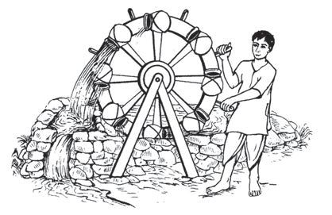<figcaption>Figure fig_ch03_p049_06 (Page 49)</figcaption></figure>
  <figure class="diagram-card" id="fig_ch03_p049_07"><figcaption>Figure fig_ch03_p049_07 (Page 49)</figcaption></figure>
  <figure class="diagram-card" id="fig_ch03_p049_08"><figcaption>Figure fig_ch03_p049_08 (Page 49)</figcaption></figure>
  <figure class="diagram-card" id="fig_ch03_p049_09"><figcaption>Figure fig_ch03_p049_09 (Page 49)</figcaption></figure>
  <figure class="diagram-card" id="fig_ch03_p049_10"><figcaption>Figure fig_ch03_p049_10 (Page 49)</figcaption></figure>
  <figure class="diagram-card" id="fig_ch03_p049_11"><figcaption>Figure fig_ch03_p049_11 (Page 49)</figcaption></figure>
  <div class="page-content">
    <p>‹žŒ›„š†“cgŦDzÄ–Œž—“c</p>
    <p>užsšĹ§
gŦDz›Æ
Žžˆ¡ƀĞ –šŒŦ“Dz“ǚ›‚›
¡} –“›¢”•‚sÇ xÅă
¡xƮs</p>
    <p>£s¡Ĺš’›c“DzˆšŽ“c
v}›ũc eŽvĞ
‹žŒ›„š†Ĺ›¡ź ‰ŒšĬš Օ›¡}
“Dzšˆ†c sšÅ•›¢s‚ŽƂ“Åņā‘¡} “›sš–Ĺ›¢Ú§ †›ă
“›“› ‚Žc£s¡Ĺš’›s¡‘z†āÇzœ“›‚ŒšÅuŒš›–ǵœsŽ›ă
ˆŽš“ǙÚ‘›Æ †›ųc –š—›‚DzՂ›s‘›Æ †›ųc gښ¡Ĺ
£s¡Ĺš’›s¡‘ڝ›ă§ †ŒÚ§ “›“Žc ‹›ÚųĬ§  iÆt††
ā‘›Æ †›ųc ‹›ă›ĞǬ ˆŽš“ǙÚ¡‘ڝ›ăǬ “›“Žc x“¡}
¢xÅĹ›ĞĬ§ g‚›Æ †›ų§ eښĹ§ †›†›ų›Žų £s¡Ĺš’›
sÇn¡‚š¡Úš¡ų§s¡ĬśˆĞ›sˆžÅśšÚž</p>
    <p>s¡ĬśˆŽš“ǙÚÇ
zŒÃˆšŅāÇ</p>
    <p>£s¡Ĺš’›sÇ
z</p>
    <p>ŒÃˆšŅ†›Åƣšc</p>
    <p>z</p>
    <p></p>
    <p>zŒĹsÇ</p>
    <p>z</p>
    <p></p>
    <p>zx›ƽ¡sšĬǬ“ǙÚÇ</p>
    <p>z</p>
    <p></p>
    <p>zˆĞ§ˆŽĹ›“ȼāÇ</p>
    <p>z</p>
    <p></p>
    <p>zf†¡ÚšƠ›Æ‚œÅĹ”›ƺāÇ</p>
    <p>z</p>
    <p></p>
    <p>z</p>
    <p>–ǵÅĴc¡“Ǭ›“›ˆ›}›ƀǬsƽ§
mų›“›Æ‚œÅĹf‹ŽāÇ</p>
    <p>“›“›  £s¡Ĺš’›s‘›Æ nÅ¡ƀĞ“Å
e“Ž¡}sžĞš§ŒsÇŽžˆœsŽ›ăg“Íu›Æ
sÇÎeƒ“šÍ¢Nj›sÇÎmų§e›¡ƀН
‹Žsž}c ¢Nj›sÇÚ§ ecuœsšŽc †Ƶ›
¢Nj›s‘›¡ ecuāÇÚ§ e‚›¡ź †›Œ
āLjš›¢ÚĬ››Žų</p>
    <p>¢Nj›sÇ
£s¡Ĺš’›sšŽ¡}c
să“}ښŽ
¡}c –cv}†š›Žų ¢Nj›sÇ
e–cȿ‚“ǙÚÇ ¢”tŽ›Ús iƈš
„†¡Ĺ †›ũ›Ús iƈųā¡‘
“›ˆ››¡Ĺ›Ús mų›“š›Žų
g“¡}xŒ‚sÇ
ǢšÄ¢Å§-&lt;</p>
    <p>49</p>
  </div>
</section><section class="page-section" id="page-50">
  <div class="page-header"><span class="page-number">Page 50</span></div>
  <figure class="diagram-card" id="fig_ch03_p050_01"><figcaption>Figure fig_ch03_p050_01 (Page 50)</figcaption></figure>
  <figure class="diagram-card" id="fig_ch03_p050_02"><figcaption>Figure fig_ch03_p050_02 (Page 50)</figcaption></figure>
  <figure class="diagram-card" id="fig_ch03_p050_03"><figcaption>Figure fig_ch03_p050_03 (Page 50)</figcaption></figure>
  <figure class="diagram-card" id="fig_ch03_p050_04"><figcaption>Figure fig_ch03_p050_04 (Page 50)</figcaption></figure>
  <figure class="diagram-card" id="fig_ch03_p050_05"><figcaption>Figure fig_ch03_p050_05 (Page 50)</figcaption></figure>
  <figure class="diagram-card" id="fig_ch03_p050_06"><figcaption>Figure fig_ch03_p050_06 (Page 50)</figcaption></figure>
  <figure class="diagram-card" id="fig_ch03_p050_07">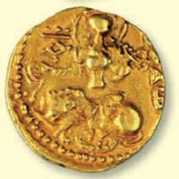<figcaption>Figure fig_ch03_p050_07 (Page 50)</figcaption></figure>
  <figure class="diagram-card" id="fig_ch03_p050_08">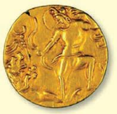<figcaption>Figure fig_ch03_p050_08 (Page 50)</figcaption></figure>
  <figure class="diagram-card" id="fig_ch03_p050_09"><figcaption>Figure fig_ch03_p050_09 (Page 50)</figcaption></figure>
  <figure class="diagram-card" id="fig_ch03_p050_10"><figcaption>Figure fig_ch03_p050_10 (Page 50)</figcaption></figure>
  <figure class="diagram-card" id="fig_ch03_p050_11"><figcaption>Figure fig_ch03_p050_11 (Page 50)</figcaption></figure>
  <figure class="diagram-card" id="fig_ch03_p050_12">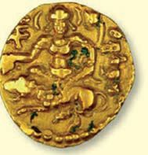<figcaption>Figure fig_ch03_p050_12 (Page 50)</figcaption></figure>
  <figure class="diagram-card" id="fig_ch03_p050_13">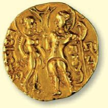<figcaption>Figure fig_ch03_p050_13 (Page 50)</figcaption></figure>
  <figure class="diagram-card" id="fig_ch03_p050_14"><figcaption>Figure fig_ch03_p050_14 (Page 50)</figcaption></figure>
  <figure class="diagram-card" id="fig_ch03_p050_15"><figcaption>Figure fig_ch03_p050_15 (Page 50)</figcaption></figure>
  <figure class="diagram-card" id="fig_ch03_p050_16"><figcaption>Figure fig_ch03_p050_16 (Page 50)</figcaption></figure>
  <figure class="diagram-card" id="fig_ch03_p050_17"><figcaption>Figure fig_ch03_p050_17 (Page 50)</figcaption></figure>
  <figure class="diagram-card" id="fig_ch03_p050_18"><figcaption>Figure fig_ch03_p050_18 (Page 50)</figcaption></figure>
  <figure class="diagram-card" id="fig_ch03_p050_19"><figcaption>Figure fig_ch03_p050_19 (Page 50)</figcaption></figure>
  <figure class="diagram-card" id="fig_ch03_p050_20"><figcaption>Figure fig_ch03_p050_20 (Page 50)</figcaption></figure>
  <div class="page-content">
    <p>e Dzšc</p>
    <p>“DzšˆšŽ“c“š›zDz“c
užsšĹ›¡ź ‚}ÚśÆ f‹DzŦŽ“š›zDzc “‘¡Ž “›ˆŒš›
ŽųՕ›Ú§ˆ¡Œ“›“› £s¡Ĺš’›s‘csŽs”†›Åƣš“c
†›†›ų›Žų‚š› ˆĞ›s›Æ †›ų§ Œ†ǡ›šÚ›¢ƽš sŽs”
“›„u§ Å †›Åƣ›ă gŎc iƈųāÇ “DzšˆšŽĹ›¡ź
ŒtDz g†ā‘š›Žų nǯ“c “› f‹DzŦŽ“DzšˆšŽ
“ǙÚ‘›¡šųš›Žų “ȼc “›“›  ‚ŽĹ›Ǭ “ȼ
†uŽĹšÅ
āÇ Œ–§›Äsš›¢sš›†Ä “Ä¢‚š‚›Æ†›Åƣ›ă›Žų</p>
    <p>†uŽ¢NjǑ›Ä </p>
    <p>†uŽā‘›¡ –ƠųŽš
să“}ښŽšg“Å
‹ŽĹ›cˆÿš‘›s‘š
›Žųsž}š¡‚ “ÅĹs
–cvā‘›¡ƂŒtŽš
›ŽųgڞĞÅ</p>
    <p>ˆDž›¢Œ•Dz Œ¢ •Dz „䛁ˆžÅ¢“•Dz ¢DZ mų›“›}ā
‘Œš›užŶšÅÚ§ “›¢„” “DzšˆšŽŠŰc†›†›ų›Žų
hsšvĞśÆˆ‚› “DzšˆšŽˆš‚sÇ“›s–›ă“ų
Œ›să–ǵÅĴ†šā‘c¡“Ǭ›¡xƠ§ †šā‘cˆ
śÚ›†uŽ¢NjǑ›–šÅƒ“š—mųœ“DzšˆšŽƂŒtÅÚ§
‹ŽĹ›Æˆÿš‘›ĹŒĬš›Žų£“”š›ˆš}œˆŅc
s†z§ Njš“Ǚ› s–DZŠ› iċ›†› ŒƒŽ Œ‚š“
“DzšˆšŽƂš š†DzŒǬˆĞā‘š›Žų</p>
    <p>užsš†šāÇ(Gupta Coins)</p>
    <p>50</p>
    <p>–šŒž—Dz”šȼc-</p>
  </div>
</section><section class="page-section" id="page-51">
  <div class="page-header"><span class="page-number">Page 51</span></div>
  <figure class="diagram-card" id="fig_ch03_p051_01"><figcaption>Figure fig_ch03_p051_01 (Page 51)</figcaption></figure>
  <figure class="diagram-card" id="fig_ch03_p051_02"><figcaption>Figure fig_ch03_p051_02 (Page 51)</figcaption></figure>
  <figure class="diagram-card" id="fig_ch03_p051_03"><figcaption>Figure fig_ch03_p051_03 (Page 51)</figcaption></figure>
  <figure class="diagram-card" id="fig_ch03_p051_04"><figcaption>Figure fig_ch03_p051_04 (Page 51)</figcaption></figure>
  <figure class="diagram-card" id="fig_ch03_p051_05">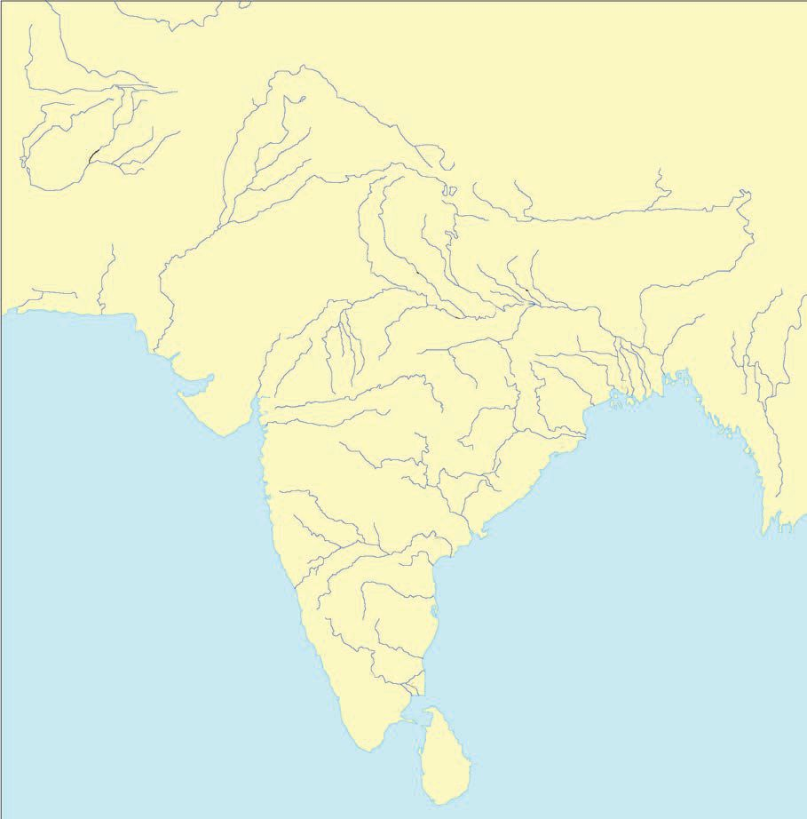<figcaption>Figure fig_ch03_p051_05 (Page 51)</figcaption></figure>
  <div class="page-content">
    <p>‹žŒ›„š†“cgŦDzÄ–Œž—“c</p>
    <p>užsš¡Ĺx›Ƃ š††uŽāÇ
‹žˆ}c</p>
    <p>s†z§ Njš“Ǚ›
£“”š›
ˆš}œˆŅc
s–DZŠ›</p>
    <p>ŒƒŽ</p>
    <p>iċ›†›</p>
    <p>‹žˆ}śÆ¢Žt¡ƀ}Ĺ››Ž›Úųužsš¡Ĺ†uŽāÇgų¡Ĺ
n¡‚š¡Ú–cǚš†ā‘›š¡ų§s¡Ĭŝs
z.....................................................................................................................................................................................</p>
    <p>z.....................................................................................................................................................................................
z.....................................................................................................................................................................................
z.....................................................................................................................................................................................
z.....................................................................................................................................................................................
z.....................................................................................................................................................................................
z.....................................................................................................................................................................................
z....................................................................................................................................................................................</p>
    <p>ǢšÄ¢Å§-&lt;</p>
    <p>51</p>
  </div>
</section><section class="page-section" id="page-52">
  <div class="page-header"><span class="page-number">Page 52</span></div>
  <figure class="diagram-card" id="fig_ch03_p052_01"><figcaption>Figure fig_ch03_p052_01 (Page 52)</figcaption></figure>
  <figure class="diagram-card" id="fig_ch03_p052_02"><figcaption>Figure fig_ch03_p052_02 (Page 52)</figcaption></figure>
  <figure class="diagram-card" id="fig_ch03_p052_03"><figcaption>Figure fig_ch03_p052_03 (Page 52)</figcaption></figure>
  <figure class="diagram-card" id="fig_ch03_p052_04"><figcaption>Figure fig_ch03_p052_04 (Page 52)</figcaption></figure>
  <figure class="diagram-card" id="fig_ch03_p052_05"><figcaption>Figure fig_ch03_p052_05 (Page 52)</figcaption></figure>
  <div class="page-content">
    <p>e Dzšc</p>
    <p>–›g fšc†žǯš¢Ĭš¡} ¢šŒš–šƤšzDzc ‚sŽsc £x†ÚšŽ›Æ
†›ųcˆšDžš‚DzňН†›Åƣš“›„Dzˆ~›Úsc¡xƫ¢”•cgŦDz
¡}“›¢„”“š›zDzśÆ“›ŒšŭDzc–c‹“›ăg‚§ f‹DzŦŽ
“š›zDz¡ĹcƂ‚›sžŒš›Šš ›ă£s¡Ĺš’›sšŽcsŽs”“›„DzښŽc să“}ś†š› ŽšzDzś¡ź ˆ‹šuā‘›¢Ú§
†œāų‚›†§ s““ų e“Å ÷šŒā‘›Æ‚¡ų p‚ā›zœ“›ÚšÄ
‚}ā› g‚§ ss‘¡}c £s¡Ĺš’›s‘¡}c ÷šŒ“Æڎ
ś¢Ú§ †›ă  să“}ś¡ź ‚sÅ㍝c £s¡Ĺš’›s‘¡}
s“c÷šŒ“Æڎ“cˆƂ š††uŽā‘¡}c‚sÅăƩ§sšŽ
Œš› s–šcŠ› —Ǚ›†ˆŽc e—›ĄŅc ‚ä”› e¢š Dz
iċ›†› ŒƒŽ ‚}ā› †uŽā‘¡}¡ƽšc Ƃ€› †ǐ¡ƀН
–›g  eĕšc †žǯšĬ›¡ £x†›Æ †›ųǬ –ĕšŽ›š›Žų
‰š—›š¡ź“›“Žā‘›Æ“ĆuŽā‘š›“›¢”•›ƀ›ăˆ†u
Žā‘cn’šc†žǯšĬ›¡ £x†œ–§–ĕšŽ›š—šÄ–šā›¡ź
“›“Žā‘›Æ ÷šŒā‘šš§ “›“Ž›Úų‚§ eښĹĬš
†uŽā‘¡}‚sÅă¡–žx›ƀ›Úų‚š§h“›“Žc</p>
    <p>–šŒž—›szœ“›‚c
užŶšŽ¡}sšĹ§ Žžˆc¡sšĬ“›“› ¡‚š’›ÆڞĞā¡‘ ¢Nj›
sÇ  ڝ›ă§ ŒƠ§ †ƣÇ xÅă¡xƫ“¢ƽš ˆ‚› ¡‚š’›ÆڞĞā
‘¡}cz†“›‹šuā‘¡}cs}ų“Ž“§ †›Ž“ ›iˆ“›‹šuā‘¡}
ŽžˆœsŽĹ›†§ sšŽŒš› †›†›ų›Žų “ÅĴ“Dz“ǚƩ§
ˆ‚‚š› iÅų“ų ¡‚š’›ÆڞĞā¡‘ iǡښǬšÄ  s’›š
¡‚“ų h –š—xŽDzśÆ q¢Žš ¡‚š’›ÆÚžĞ“c ˆ‚›zš‚›
s‘c iˆzš‚›s‘Œš›ĹœÅų “Dz‚DzǙ ¡‚š’›ÆڞĞāÇڝˆ¡Œ
e†Dz¢„”ā‘›Æ †›ų§ mś¢ăÅų“Å “†ā‘›Æ “–›ă›Žų“Å
†›•š„Å  “Dz‚DzǙ zš‚››Æ¡ƀĞ“Å ‚ƣ›Ǭ “›“š—Ĺ›ž¡}
z†›Úų“Å mų›“¡Žƽšc ˆ‚› ˆ‚› zš‚›s‘š›ĹœÅų
eā¡†zš‚›“Dz“ǚsž}‚Æ–ÿœÅĴŒš›Œš›</p>
    <p>52</p>
    <p>–šŒž—Dz”šȼc-</p>
  </div>
</section><section class="page-section" id="page-53">
  <div class="page-header"><span class="page-number">Page 53</span></div>
  <figure class="diagram-card" id="fig_ch03_p053_01"><figcaption>Figure fig_ch03_p053_01 (Page 53)</figcaption></figure>
  <figure class="diagram-card" id="fig_ch03_p053_02"><figcaption>Figure fig_ch03_p053_02 (Page 53)</figcaption></figure>
  <figure class="diagram-card" id="fig_ch03_p053_03"><figcaption>Figure fig_ch03_p053_03 (Page 53)</figcaption></figure>
  <figure class="diagram-card" id="fig_ch03_p053_04"><figcaption>Figure fig_ch03_p053_04 (Page 53)</figcaption></figure>
  <figure class="diagram-card" id="fig_ch03_p053_05"><figcaption>Figure fig_ch03_p053_05 (Page 53)</figcaption></figure>
  <figure class="diagram-card" id="fig_ch03_p053_06"><figcaption>Figure fig_ch03_p053_06 (Page 53)</figcaption></figure>
  <figure class="diagram-card" id="fig_ch03_p053_07"><figcaption>Figure fig_ch03_p053_07 (Page 53)</figcaption></figure>
  <figure class="diagram-card" id="fig_ch03_p053_08"><figcaption>Figure fig_ch03_p053_08 (Page 53)</figcaption></figure>
  <figure class="diagram-card" id="fig_ch03_p053_09"><figcaption>Figure fig_ch03_p053_09 (Page 53)</figcaption></figure>
  <figure class="diagram-card" id="fig_ch03_p053_10"><figcaption>Figure fig_ch03_p053_10 (Page 53)</figcaption></figure>
  <figure class="diagram-card" id="fig_ch03_p053_11"><figcaption>Figure fig_ch03_p053_11 (Page 53)</figcaption></figure>
  <div class="page-content">
    <p>‹žŒ›„š†“cgŦDzÄ–Œž—“c</p>
    <p>gƂsšŽc Žžˆ¡ƀĞ “Dz“ǚ›Æ ƖšǦÅ
äŅ›Å£“”DzÅmų›“ÅÚ§–Œž—csƺ›ă›Žų
ǚš†Œš†āÇÚ§ Œšǯc“ų›ƽ n’šc †žǯš
Ĭ›Æ gŦDz –ŭŔ›ă £x†œ–§  –ĕšŽ›š
—šÄ–šw§ ”žŝ¡Ž Օ›ÚšÅ mų§ “›¢”•›ƀ›
ڝų h “›“ŽāÇ sšÅ•›s –Œž—Ĺ›Æ
”žŝŽ¡}e“ǚ¡–žx›ƀ›Úų‚š§
xš‚Å“ŁDz“Dz“ǚƩ§ˆĹš›ŽųÍeŦDzzÅÎ
mų “›‹šu¡Ĺ ¡‚šĞsž}šĹ“Žš›sÚšÚ›
eŦDzzŽ›Ænǯ“c‚š¡’š›sÚšÚ¡ƀĞ‚§
ÍxįšÅÎ mų NJ”š†ˆšsŽc ÍxÅƣsšŽÅÎ
mų ¢‚šÆjƩ›}ų “›‹šuā‘Œš›Žų</p>
    <p>ȼœs‘¡}ˆ„“›
“sš}s š›š›Žų Ƃ‹š“‚›už¡¢ƀš¡
x›Žšč›ŒšÅf„Ž›Ú¡ƀĞ›Ž¡ųÿ›c¡ˆš‚¢“
ȼœs‘¡} †› “‘¡Ž ‚š’§ų‚š›Žų Žšč›
Œ‚Æ‚š¢’šĞ§mƽš“›‹šucȼœs‘cˆŽ•ŶšÅÚ§
“›¢ Žš›Ž›ÚcmųsŽ‚¡ƀĞ›Žųių‚
“›‹šuā‘›¡ ȼœÚ§ ¢ˆšc ¡ˆš‚¢“ –Œž—
śÆ iÅų ˆ„“›¢š ˆŽ›u†¢š ‹›ă›Ž
ų›ƽpŽƖšǦȼœÚ¢ˆšc ‹žŒ›„š†c¡xƮ
¡ƀĞ‚š›¡‚‘›“›ƽ</p>
    <p>e†¢šŒƂ‚›¢šŒ
“›“š—āÇ
“›“› zš‚›s‘›Æ¡ƀĞ“Å‚ƣ›
Ǭ“›“š—ā¡‘ڝ›ă§eŃ
”šȼśÆƂ‚›ˆš„›Úų
iÅų‚š›sÚšÚ¡ƀ}ų
zš‚››¡ˆŽ•†c‚š’§ų
‚š›sÚšÚ¡ƀ}ų
zš‚››¡ ȼœc‚ƣ›Ǭ
“›“š—ce†¢šŒ“›“š—c
mų›¡ƀ}ų
iÅų‚š›sÚšÚ¡ƀ}ų
zš‚››¡ ȼœc‚š’§ų‚š›
sÚšÚ¡ƀ}ųzš‚››¡
ˆŽ•†c‚ƣ›Ǭ“›“š—c
Ƃ‚›¢šŒ“›“š—cmų›
¡ƀ}ų</p>
    <p>xįšÅ‰š—›š¡ź“›“Žā‘›Æ
xůužÄ ŽĬšŒ¡ź ‹ŽsšĹ§ –›g eĕšc †žǯšĬ§  gŦDz –ŭŔ›ă
£x†›Æ †›ųǬ ŠŗŒ‚–ĕšŽ›š ‰š—›šÄ xįšŶš¡ŽÚ›ă§
gā¡† ˆų φuŽĹ›¢¢Úš s¢Ơš‘Ĺ›¢¢Úš Ƃ¢“”›Úų xįšÅ
pŽ ŒŽƀs›Æ e}›ă§ ”ƒŒĬšÚŒš›Žų g“Ž¡} “Ž“§ ŒÄsĞ› Œ†ǡ›
šÚ›¢ŒÆzš‚›ÚšÅÚ§Œš›†›ÆښÄ¢“Ĭ›š›Žųgā¡† ¡xƫ›Žų‚§Ð</p>
    <p>ǢšÄ¢Å§-&lt;</p>
    <p>53</p>
  </div>
</section><section class="page-section" id="page-54">
  <div class="page-header"><span class="page-number">Page 54</span></div>
  <figure class="diagram-card" id="fig_ch03_p054_01"><figcaption>Figure fig_ch03_p054_01 (Page 54)</figcaption></figure>
  <figure class="diagram-card" id="fig_ch03_p054_02"><figcaption>Figure fig_ch03_p054_02 (Page 54)</figcaption></figure>
  <figure class="diagram-card" id="fig_ch03_p054_03"><figcaption>Figure fig_ch03_p054_03 (Page 54)</figcaption></figure>
  <figure class="diagram-card" id="fig_ch03_p054_04"><figcaption>Figure fig_ch03_p054_04 (Page 54)</figcaption></figure>
  <figure class="diagram-card" id="fig_ch03_p054_05"><figcaption>Figure fig_ch03_p054_05 (Page 54)</figcaption></figure>
  <figure class="diagram-card" id="fig_ch03_p054_06">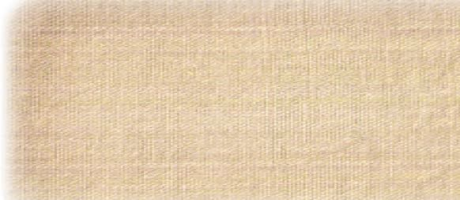<figcaption>Figure fig_ch03_p054_06 (Page 54)</figcaption></figure>
  <figure class="diagram-card" id="fig_ch03_p054_07"><figcaption>Figure fig_ch03_p054_07 (Page 54)</figcaption></figure>
  <figure class="diagram-card" id="fig_ch03_p054_08">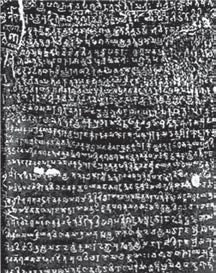<figcaption>Figure fig_ch03_p054_08 (Page 54)</figcaption></figure>
  <figure class="diagram-card" id="fig_ch03_p054_09"><figcaption>Figure fig_ch03_p054_09 (Page 54)</figcaption></figure>
  <figure class="diagram-card" id="fig_ch03_p054_10"><figcaption>Figure fig_ch03_p054_10 (Page 54)</figcaption></figure>
  <figure class="diagram-card" id="fig_ch03_p054_11"><figcaption>Figure fig_ch03_p054_11 (Page 54)</figcaption></figure>
  <figure class="diagram-card" id="fig_ch03_p054_12"><figcaption>Figure fig_ch03_p054_12 (Page 54)</figcaption></figure>
  <figure class="diagram-card" id="fig_ch03_p054_13"><figcaption>Figure fig_ch03_p054_13 (Page 54)</figcaption></figure>
  <figure class="diagram-card" id="fig_ch03_p054_14"><figcaption>Figure fig_ch03_p054_14 (Page 54)</figcaption></figure>
  <figure class="diagram-card" id="fig_ch03_p054_15"><figcaption>Figure fig_ch03_p054_15 (Page 54)</figcaption></figure>
  <figure class="diagram-card" id="fig_ch03_p054_16"><figcaption>Figure fig_ch03_p054_16 (Page 54)</figcaption></figure>
  <figure class="diagram-card" id="fig_ch03_p054_17"><figcaption>Figure fig_ch03_p054_17 (Page 54)</figcaption></figure>
  <div class="page-content">
    <p>e Dzšc</p>
    <p>Žšȹc¢sůe ›sšŽ“cƂš¢„”›sš ›sšŽ“c
Ïs¢ŠŽ†c“Ž†cgů†ceŦs†c–Œ†š“†c
‚†›Ú¢ˆšųp¡Ž‚›Žš‘›c‹žŒtśƼšĹ“†c
užsš¡Ĺnǯ“c ”Þ†š‹Žš ›sšŽ›š›Žų
–Œŝuž¡†ƀǯ›Ǭe—Šš„›Æǚ›‚›¡xƮų
ƂšuƂ”Ǚ››Æ†›ųǬ“Ž›s‘š›‚§</p>
    <p>užsšvĞś¡ Žšzš“›¡ź e ›sšŽ¡Ĺڝ›ăǬ m¡Ŧƽšc
“›“ŽāÇg‚›Æ†›ų§ ‹›Úc?
zŽšzš“›¡†£„“–Œš††š›sÚšÚ›
z</p>
    <p>užsš¡Ĺ
÷šŒ‹Žc
užsš¡Ĺ÷šŒ
‹Žc†}ś›
Žų‚§Í÷šŒˆ‚›Î
eƒ“šÍ÷šŒš Dz
äÄÎf›Žų
Í÷šŒƾŗÅÎmų›
¡ƀĞ›Žų÷šŒ
ŒtDzŽ¡} –cv
Œš§÷šŒĹ›¡
‚ÅÚāÇ‚œÅś
Žų‚§÷šŒĹ›Æ
Ƃ š† z†“›‹šuc
sŕsŽš›Žų
ŒŽƀ›ÚšÅ
¡†§ŝsšÅ
sš›¢ŒÚų“Å
mų›“Žc
iĬš›Žų
g“Ž¡} –cv
āÇڝc÷šŒ‹Ž
śÆƂš‚›†› Dzc
iĬš›Žų</p>
    <p>54</p>
    <p>–šŒž—Dz”šȼc-</p>
    <p>“›ˆŒš e ›sšŽŒĬš›Žų“Žš§ užŽšzšÚŶšÅ e¢‚š
¡}šƀce“ÅÚ§x›iŎ“š„›‚ǵā‘ciĬš›Žųe“m¡Ŧ
ƽš¡Œų§¢†šÚDZ
f⌁ā‘›Æ†›ų§
Ƃzs¡‘ –cŽä›Ús
ƖšǦ¡ŽcNjŒ¡Žc
Šŗ£z† “›‹šuāÇ eŠ¡Žc
–cŽä›Ús
†œ‚›†›Å“—c†}ŝs
užŽšzšÚŶšÅsœ’}ڛƂ¢„”ā‘›Æe“›}¡Ĺ ŽšzšÚŶš¡Ž
‚ā‘¡}–šŒŦŶšŽš›sÚšÚ›‚}ŽšÄe†“„›ăe“ÅÚ§
–ǵc‹Žc †Æs› e“Ž¡} ‹ŽsšŽDzā‘›c ˆ›Ŧ}Å㍛c
užŽšzšÚŶšÅ g}¡ˆĞ›Žų›ƽ  mųšÆ ¢†Ž›Ğ‹Ž›ă Ƃ¢„”ā
‘›Æ“›ˆŒš‹Ž–c“› š†cg“Å“›s–›ƀ›ă</p>
    <p>užsš¡Ĺ ‹Ž–c“› š†“c ŒŽDzsš¡Ĺ ‹Ž
–c“› š†“c‚ƣ›Æ‚šŽ‚ŒDzc ¡xƫ§ pŽs›ƀ§ ‚Ʈšš
ڝs</p>
  </div>
</section><section class="page-section" id="page-55">
  <div class="page-header"><span class="page-number">Page 55</span></div>
  <figure class="diagram-card" id="fig_ch03_p055_01"><figcaption>Figure fig_ch03_p055_01 (Page 55)</figcaption></figure>
  <figure class="diagram-card" id="fig_ch03_p055_02"><figcaption>Figure fig_ch03_p055_02 (Page 55)</figcaption></figure>
  <figure class="diagram-card" id="fig_ch03_p055_03"><figcaption>Figure fig_ch03_p055_03 (Page 55)</figcaption></figure>
  <figure class="diagram-card" id="fig_ch03_p055_04"><figcaption>Figure fig_ch03_p055_04 (Page 55)</figcaption></figure>
  <figure class="diagram-card" id="fig_ch03_p055_05"><figcaption>Figure fig_ch03_p055_05 (Page 55)</figcaption></figure>
  <figure class="diagram-card" id="fig_ch03_p055_06"><figcaption>Figure fig_ch03_p055_06 (Page 55)</figcaption></figure>
  <figure class="diagram-card" id="fig_ch03_p055_07"><figcaption>Figure fig_ch03_p055_07 (Page 55)</figcaption></figure>
  <figure class="diagram-card" id="fig_ch03_p055_08"><figcaption>Figure fig_ch03_p055_08 (Page 55)</figcaption></figure>
  <figure class="diagram-card" id="fig_ch03_p055_09"><figcaption>Figure fig_ch03_p055_09 (Page 55)</figcaption></figure>
  <figure class="diagram-card" id="fig_ch03_p055_10"><figcaption>Figure fig_ch03_p055_10 (Page 55)</figcaption></figure>
  <figure class="diagram-card" id="fig_ch03_p055_11"><figcaption>Figure fig_ch03_p055_11 (Page 55)</figcaption></figure>
  <figure class="diagram-card" id="fig_ch03_p055_12"><figcaption>Figure fig_ch03_p055_12 (Page 55)</figcaption></figure>
  <figure class="diagram-card" id="fig_ch03_p055_13"><figcaption>Figure fig_ch03_p055_13 (Page 55)</figcaption></figure>
  <figure class="diagram-card" id="fig_ch03_p055_14"><figcaption>Figure fig_ch03_p055_14 (Page 55)</figcaption></figure>
  <figure class="diagram-card" id="fig_ch03_p055_15"><figcaption>Figure fig_ch03_p055_15 (Page 55)</figcaption></figure>
  <figure class="diagram-card" id="fig_ch03_p055_16"><figcaption>Figure fig_ch03_p055_16 (Page 55)</figcaption></figure>
  <figure class="diagram-card" id="fig_ch03_p055_17"><figcaption>Figure fig_ch03_p055_17 (Page 55)</figcaption></figure>
  <figure class="diagram-card" id="fig_ch03_p055_18"><figcaption>Figure fig_ch03_p055_18 (Page 55)</figcaption></figure>
  <figure class="diagram-card" id="fig_ch03_p055_19"><figcaption>Figure fig_ch03_p055_19 (Page 55)</figcaption></figure>
  <figure class="diagram-card" id="fig_ch03_p055_20"><figcaption>Figure fig_ch03_p055_20 (Page 55)</figcaption></figure>
  <figure class="diagram-card" id="fig_ch03_p055_21"><figcaption>Figure fig_ch03_p055_21 (Page 55)</figcaption></figure>
  <figure class="diagram-card" id="fig_ch03_p055_22"><figcaption>Figure fig_ch03_p055_22 (Page 55)</figcaption></figure>
  <figure class="diagram-card" id="fig_ch03_p055_23"><figcaption>Figure fig_ch03_p055_23 (Page 55)</figcaption></figure>
  <figure class="diagram-card" id="fig_ch03_p055_24"><figcaption>Figure fig_ch03_p055_24 (Page 55)</figcaption></figure>
  <figure class="diagram-card" id="fig_ch03_p055_25"><figcaption>Figure fig_ch03_p055_25 (Page 55)</figcaption></figure>
  <figure class="diagram-card" id="fig_ch03_p055_26"><figcaption>Figure fig_ch03_p055_26 (Page 55)</figcaption></figure>
  <figure class="diagram-card" id="fig_ch03_p055_27"><figcaption>Figure fig_ch03_p055_27 (Page 55)</figcaption></figure>
  <figure class="diagram-card" id="fig_ch03_p055_28"><figcaption>Figure fig_ch03_p055_28 (Page 55)</figcaption></figure>
  <figure class="diagram-card" id="fig_ch03_p055_29"><figcaption>Figure fig_ch03_p055_29 (Page 55)</figcaption></figure>
  <figure class="diagram-card" id="fig_ch03_p055_30"><figcaption>Figure fig_ch03_p055_30 (Page 55)</figcaption></figure>
  <figure class="diagram-card" id="fig_ch03_p055_31"><figcaption>Figure fig_ch03_p055_31 (Page 55)</figcaption></figure>
  <figure class="diagram-card" id="fig_ch03_p055_32"><figcaption>Figure fig_ch03_p055_32 (Page 55)</figcaption></figure>
  <figure class="diagram-card" id="fig_ch03_p055_33"><figcaption>Figure fig_ch03_p055_33 (Page 55)</figcaption></figure>
  <figure class="diagram-card" id="fig_ch03_p055_34"><figcaption>Figure fig_ch03_p055_34 (Page 55)</figcaption></figure>
  <figure class="diagram-card" id="fig_ch03_p055_35"><figcaption>Figure fig_ch03_p055_35 (Page 55)</figcaption></figure>
  <figure class="diagram-card" id="fig_ch03_p055_36"><figcaption>Figure fig_ch03_p055_36 (Page 55)</figcaption></figure>
  <figure class="diagram-card" id="fig_ch03_p055_37"><figcaption>Figure fig_ch03_p055_37 (Page 55)</figcaption></figure>
  <figure class="diagram-card" id="fig_ch03_p055_38"><figcaption>Figure fig_ch03_p055_38 (Page 55)</figcaption></figure>
  <figure class="diagram-card" id="fig_ch03_p055_39"><figcaption>Figure fig_ch03_p055_39 (Page 55)</figcaption></figure>
  <figure class="diagram-card" id="fig_ch03_p055_40"><figcaption>Figure fig_ch03_p055_40 (Page 55)</figcaption></figure>
  <figure class="diagram-card" id="fig_ch03_p055_41"><figcaption>Figure fig_ch03_p055_41 (Page 55)</figcaption></figure>
  <figure class="diagram-card" id="fig_ch03_p055_42"><figcaption>Figure fig_ch03_p055_42 (Page 55)</figcaption></figure>
  <div class="page-content">
    <p>‹žŒ›„š†“cgŦDzÄ–Œž—“c</p>
    <p>Ƃ”Ǚ›sÇ
ˆŽš‚†sš¡ĹgŦDzÄŽšzšÚŶšÅe“Ž¡} ¢†ĞāÇ¢vš•›Úš†š›sƽ›Æ¡sšĹ›“ă
›t›‚ā‘š§ Ƃ”Ǚ›sÇe›¡ƀĞ‚›Ænǯ“cf„Dz¢Ĺ‚§ –›gŽĬšc†žǯšĬ›Æ¡sšĹ›
“Ʃ¡ƀĞ Žŝ„šŒ¡ź z†u§ Ƃ”Ǚ›š§ e¢”šs xâ“Åś¡} z†u§ ”š–†Ĺ›¡ź
pŽ ‹šuŚš§ h Ƃ”Ǚ› ¡sšĹ›“㛎›Úų‚§  Žšzš“›¡† Ƃ”c–›Ús e¢Ŕ—Ĺ›¡ź
ŗ¢†Ğā¡‘ ƂsœÅśڝs ‚}ā›“š›Žų Ƃ”Ǚ›s‘¡} Ƃ¢‚Dzs‚sÇ Ƃ”Ǚ› m’
‚ųŽœ‚›ˆ‚›ŽžˆĹ›Æ„䛢ŦDz›¡ ¢xš‘Žšȹsž}xšžsDzˆƽ“ŽšzšÚŶšŽcˆ›Ŧ
}Åų›Žųe‚›”¢šÞ›iĬšs¡Œÿ›cpŽ‹ŽsÅŚ“›¡†ˆǯ›ǬxŽ›Ņ¢ŽtsÇmų
†››Æg“†¡ƣ–—š›Úų</p>
    <p>ƂšuƂ”Ǚ›
užŽšzš“š–Œŝuž¡źf⌁āǍŗ“›zāÇmų›“¡ƂsœÅĹ›ă¡sšĬ§ ¡sšĹ›
“ă‚š§ Ƃšu Ƃ”Ǚ›  g‚§ e—Šš„§ Ƃ”Ǚ› mųc e›¡ƀ}ų –ŒŝužÄ “}Ú§
¢†ƀšÇ Œ‚Æ ¡‚Ú§ ‚Œ›’§†š}›¡ź Ƃ¢„”āÇ “¡Ž f⌛㧠sœ’§¡ƀ}Ĺ›‚›¡† h Ƃ”Ǚ›
›ÆƂsœÅśڝųuž–„ǡ›¡Žšzs“›š›Žų—Ž›¢–†Äf§ –cȿ‚‹š•›Æh
Ƃ”Ǚ›m’‚›‚§</p>
    <p>sc–š—›‚Dz“c
užsšvĞś¡–šŒž—›sŽšȹœ“›sš–ādžƣÇsĬ¢ƽšg‚›¢†š}§e†¢š
zDzŒš›†›ÆڝųŽœ‚››ÆgښvĞśÆsc–cȿ‚–š—›‚Dz“c“‘Åų“ų
“šǙ”›ƺ“›„Dzš›ŽųsšŽcuŧnǯ“cˆ¢Žšu‚›Ƃšˆ›ă‚§†›Ž“ ›¢äŅāÇ
gښĹ§†›Åƣ›Ú¡ƀНe“¡}–“›¢”•‚sÇm¡Ŧš¡Úš›Žųmų§ ¢†šÚšc
z
sƽcgǐ›sciˆ¢šu›</p>
    <p>v}†š
¢äŅā
‘¡}†›Åƣ›‚›
(Structural
Temples)</p>
    <p>ăǬ¢äŅ†›Åƣ›‚›</p>
    <p>z</p>
    <p>¡sšĹˆ›sÇ</p>
    <p>x“¡}†Æs››Ž›Úųx›Ņādž›Žœä›ă§ užsšvĞś¡
“šǙ“›„Dz¡}–“›¢”•‚sÇs¡ĬśˆĞ›s¡ƀ}Ĺs</p>
    <p>„”š“‚šŽ¢äŅc¢„“§u€§
iĹÅƂ¢„”§</p>
    <p>‚›uš“›¡“›ǒ¢äŅc
Œ DzƂ¢„”§</p>
    <p>†šx§†s‚šŽˆšÅ“‚›
¢äŅcˆųšŒ DzƂ¢„”§
ǢšÄ¢Å§-&lt;</p>
    <p>55</p>
  </div>
</section><section class="page-section" id="page-56">
  <div class="page-header"><span class="page-number">Page 56</span></div>
  <figure class="diagram-card" id="fig_ch03_p056_01"><figcaption>Figure fig_ch03_p056_01 (Page 56)</figcaption></figure>
  <figure class="diagram-card" id="fig_ch03_p056_02"><figcaption>Figure fig_ch03_p056_02 (Page 56)</figcaption></figure>
  <figure class="diagram-card" id="fig_ch03_p056_03"><figcaption>Figure fig_ch03_p056_03 (Page 56)</figcaption></figure>
  <figure class="diagram-card" id="fig_ch03_p056_04"><figcaption>Figure fig_ch03_p056_04 (Page 56)</figcaption></figure>
  <figure class="diagram-card" id="fig_ch03_p056_05"><figcaption>Figure fig_ch03_p056_05 (Page 56)</figcaption></figure>
  <figure class="diagram-card" id="fig_ch03_p056_06"><figcaption>Figure fig_ch03_p056_06 (Page 56)</figcaption></figure>
  <figure class="diagram-card" id="fig_ch03_p056_07"><figcaption>Figure fig_ch03_p056_07 (Page 56)</figcaption></figure>
  <figure class="diagram-card" id="fig_ch03_p056_08"><figcaption>Figure fig_ch03_p056_08 (Page 56)</figcaption></figure>
  <figure class="diagram-card" id="fig_ch03_p056_09"><figcaption>Figure fig_ch03_p056_09 (Page 56)</figcaption></figure>
  <figure class="diagram-card" id="fig_ch03_p056_10"><figcaption>Figure fig_ch03_p056_10 (Page 56)</figcaption></figure>
  <figure class="diagram-card" id="fig_ch03_p056_11"><figcaption>Figure fig_ch03_p056_11 (Page 56)</figcaption></figure>
  <figure class="diagram-card" id="fig_ch03_p056_12"><figcaption>Figure fig_ch03_p056_12 (Page 56)</figcaption></figure>
  <figure class="diagram-card" id="fig_ch03_p056_13"><figcaption>Figure fig_ch03_p056_13 (Page 56)</figcaption></figure>
  <figure class="diagram-card" id="fig_ch03_p056_14"><figcaption>Figure fig_ch03_p056_14 (Page 56)</figcaption></figure>
  <figure class="diagram-card" id="fig_ch03_p056_15"><figcaption>Figure fig_ch03_p056_15 (Page 56)</figcaption></figure>
  <figure class="diagram-card" id="fig_ch03_p056_16"><figcaption>Figure fig_ch03_p056_16 (Page 56)</figcaption></figure>
  <figure class="diagram-card" id="fig_ch03_p056_17"><figcaption>Figure fig_ch03_p056_17 (Page 56)</figcaption></figure>
  <figure class="diagram-card" id="fig_ch03_p056_18">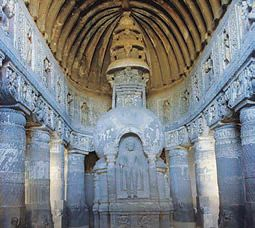<figcaption>Figure fig_ch03_p056_18 (Page 56)</figcaption></figure>
  <figure class="diagram-card" id="fig_ch03_p056_19"><figcaption>Figure fig_ch03_p056_19 (Page 56)</figcaption></figure>
  <figure class="diagram-card" id="fig_ch03_p056_20"><figcaption>Figure fig_ch03_p056_20 (Page 56)</figcaption></figure>
  <figure class="diagram-card" id="fig_ch03_p056_21">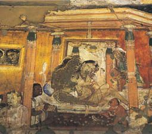<figcaption>Figure fig_ch03_p056_21 (Page 56)</figcaption></figure>
  <figure class="diagram-card" id="fig_ch03_p056_22"><figcaption>Figure fig_ch03_p056_22 (Page 56)</figcaption></figure>
  <figure class="diagram-card" id="fig_ch03_p056_23"><figcaption>Figure fig_ch03_p056_23 (Page 56)</figcaption></figure>
  <figure class="diagram-card" id="fig_ch03_p056_24"><figcaption>Figure fig_ch03_p056_24 (Page 56)</figcaption></figure>
  <figure class="diagram-card" id="fig_ch03_p056_25">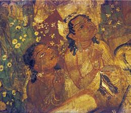<figcaption>Figure fig_ch03_p056_25 (Page 56)</figcaption></figure>
  <div class="page-content">
    <p>e Dzšc</p>
    <p>¢šsƂ”ǙŒš ezŦ›¡ Œ—šŽšȹ  u—šx›Ņā‘›Æ užsš
ŧ ‚ƮššÚ¡ƀĞ“ŒĬ§ Žšzsœzœ“›‚c Žšz–„ǡ§ e‚›Œš†
•zœ“›sÇ mų›“ g“›Æ x›ŅœsŽ“›•ŒšsųĬ§ e“›Æ
ŽšŒšŒ—š‹šŽ‚Žcuā‘cg‚›ƾĹā‘š§e¢†s†žǯšĬs¡‘
e‚›zœ“›ă§ gųc ‹cu›š›†›†›Æڝųhx›ŅāÇn¡c
‚ƮššÚ¡ƀĞ‚§ ƂՂ›„Ĺ“ÅĴāÇ¡sšĬš§</p>
    <p>už‹Žsš¡Ĺ ¢äŅā‘¡}cu—šx›Ņā
‘¡}c pŽ ›z›ǯÆ ˆ‚›ƀ§ ‚ƮššÚ› Ƃ„Å”›
ƀ›Ús
už‹ŽsšĹ§ –cȿ‚–š—›‚Dzś†§ Žšzsœ¢ƂšŇš—†c
‹›ă–cȿ‚c‹Ž‹š•š›Žųˆš›¢ˆš¡z†sœ‹š•iˆ
¢šu›ă›Žų ŠŗŒ‚ښŠ¢ˆšc –cȿ‚Ĺ›Æ Žx†sÇ †}ś
ŽšŒš“c Œ—š‹šŽ‚“c Œ›Ú ˆŽšā‘c x›Ğ¡ƀ}Ĺ›‚§
“š¡Œš’››Æ†›ų§“Ž¡Œš’››¢Ú§ Œšǯ¡ƀĞ‚§ gښĹš§</p>
    <p>56</p>
    <p>–šŒž—Dz”šȼc-</p>
  </div>
</section><section class="page-section" id="page-57">
  <div class="page-header"><span class="page-number">Page 57</span></div>
  <figure class="diagram-card" id="fig_ch03_p057_01"><figcaption>Figure fig_ch03_p057_01 (Page 57)</figcaption></figure>
  <figure class="diagram-card" id="fig_ch03_p057_02"><figcaption>Figure fig_ch03_p057_02 (Page 57)</figcaption></figure>
  <figure class="diagram-card" id="fig_ch03_p057_03"><figcaption>Figure fig_ch03_p057_03 (Page 57)</figcaption></figure>
  <figure class="diagram-card" id="fig_ch03_p057_04"><figcaption>Figure fig_ch03_p057_04 (Page 57)</figcaption></figure>
  <div class="page-content">
    <p>‹žŒ›„š†“cgŦDzÄ–Œž—“c</p>
    <p>–cȿ‚‹š•›Æ†š}sāÇsš“DzāÇ“DzšsŽc†›vĬ‚}ā›“
gښĹ§Žx›Ú¡ƀНg“›ÆƂ š†¡ƀĞx›‚§x“¡}†Æsų
÷Ū†šŒc</p>
    <p>÷ŪsÅŚ“§</p>
    <p>–š—›‚Dz“›‹šuc</p>
    <p>e‹›čš†”šsŦ‘c</p>
    <p>sš‘›„š–Ä</p>
    <p>†š}sc</p>
    <p>sŒšŽ–c‹“c</p>
    <p>sš‘›„š–Ä</p>
    <p>sš“Dzc</p>
    <p>ƜĄs}›sc</p>
    <p>”žŝsÄ</p>
    <p>†š}sc</p>
    <p>–ǵſ“š–“„Ĺc</p>
    <p>‹š–Ä</p>
    <p>†š}sc</p>
    <p>Ņ›sšį›</p>
    <p>‹ÅĶ—Ž›</p>
    <p>“DzšsŽc</p>
    <p>eŒŽ¢sš”c</p>
    <p>eŒŽ–›c—Ä</p>
    <p>†›vĬ</p>
    <p>–cȿ‚†š}sāÇ ¢šsƂ–›ŗŒš¡ÿ›c e“ e“‚Ž›ƀ›Ú
¢ƠšÇ ių‚ ˆŽ•sƒšˆšŅāÇ ŒšŅ¢Œ –cȿ‚‹š• –c–šŽ›ă›
ŽųǬž Žšč›}ڌǬ ȼœs‘c ‚š’§ų‚š› sÚšÚ¡ƀĞ
zš‚›s‘›¡ˆŽ•sƒšˆšŅā‘cƂšÕ‚§‹š•ˆŒš›Žų
gŦDzÄ ‚‚ǵx›ŦƩ§ e}›ǚš†Œ›Ğ x› „Å”†ā‘c h sšvĞ
śÆiÅų“ų•§„Å”†āÇ (Six Systems of Philosophy) mų§
e›¡ƀĞ g“ ˆŽǝŽ –c“š„ā‘›ž¡}š§ Žžˆ¡ƀН“ų‚§
f„Å”†ā¡‘ce“¡}“ÞšÚ¡‘c†ŒÚ§ˆŽ›x¡ƀ}šc</p>
    <p>„Å”†c</p>
    <p>“Þš“§</p>
    <p>–šctDz</p>
    <p>sˆ›Ä</p>
    <p>¢šu</p>
    <p>ˆ‚ꐛ</p>
    <p>†Dzš</p>
    <p>u‚ŒÄ</p>
    <p>£“¢”•›s</p>
    <p>sš„Ä</p>
    <p>¢“„šŦ</p>
    <p>Šš„Žš</p>
    <p>ŒœŒšc–</p>
    <p>£zŒ›†›</p>
    <p>ǢšÄ¢Å§-&lt;</p>
    <p>57</p>
  </div>
</section><section class="page-section" id="page-58">
  <div class="page-header"><span class="page-number">Page 58</span></div>
  <figure class="diagram-card" id="fig_ch03_p058_01"><figcaption>Figure fig_ch03_p058_01 (Page 58)</figcaption></figure>
  <figure class="diagram-card" id="fig_ch03_p058_02"><figcaption>Figure fig_ch03_p058_02 (Page 58)</figcaption></figure>
  <figure class="diagram-card" id="fig_ch03_p058_03"><figcaption>Figure fig_ch03_p058_03 (Page 58)</figcaption></figure>
  <figure class="diagram-card" id="fig_ch03_p058_04"><figcaption>Figure fig_ch03_p058_04 (Page 58)</figcaption></figure>
  <figure class="diagram-card" id="fig_ch03_p058_05"><figcaption>Figure fig_ch03_p058_05 (Page 58)</figcaption></figure>
  <figure class="diagram-card" id="fig_ch03_p058_06"><figcaption>Figure fig_ch03_p058_06 (Page 58)</figcaption></figure>
  <figure class="diagram-card" id="fig_ch03_p058_07"><figcaption>Figure fig_ch03_p058_07 (Page 58)</figcaption></figure>
  <figure class="diagram-card" id="fig_ch03_p058_08"><figcaption>Figure fig_ch03_p058_08 (Page 58)</figcaption></figure>
  <figure class="diagram-card" id="fig_ch03_p058_09"><figcaption>Figure fig_ch03_p058_09 (Page 58)</figcaption></figure>
  <figure class="diagram-card" id="fig_ch03_p058_10"><figcaption>Figure fig_ch03_p058_10 (Page 58)</figcaption></figure>
  <figure class="diagram-card" id="fig_ch03_p058_11"><figcaption>Figure fig_ch03_p058_11 (Page 58)</figcaption></figure>
  <figure class="diagram-card" id="fig_ch03_p058_12"><figcaption>Figure fig_ch03_p058_12 (Page 58)</figcaption></figure>
  <figure class="diagram-card" id="fig_ch03_p058_13"><figcaption>Figure fig_ch03_p058_13 (Page 58)</figcaption></figure>
  <div class="page-content">
    <p>e Dzšc</p>
    <p>”šȼc
užsšĹ§ ”šȼ÷Ūā‘c Žx›Ú¡ƀĞ›Žų  g“ Ƃ š†Œšc
¢zDzš‚›”šȼc u›‚c £“„Dz”šȼc mųœ ¢Œts‘›š›Žų
“Žš—Œ›—›Ž¡ź Ə—‚§ – c—›‚c fŽDz‹}¡ź fŽDz‹}œ“c
eŒŽ–›c—¡ź eŒŽ¢sš”“c gښĹ§  Žx›Ú¡ƀĞ Ƃ š†
”šȼ÷Ūā‘š§</p>
    <p>¢š—–cǘŽc
–›g†ššc†žǯšĬ›Æ†›Åƣ›ăƗ›
Ú}Ĺ§Œ—§‘››Æ†›ÆڝųgŽƠ
Ǚc‹c eښ¡Ĺ ¢š—–cǘŽ
–š¢ÿ‚›s“›„DzÚ§ i„š—ŽŒš§
†žǯšĬs‘š›Œ’c¡“›¢Œǯ§†›Æ
ڝų h gŽƠǙc‹c g¢ƀš’c ‚Ž
Ơ›Úš¡‚†›†›Æڝų</p>
    <p>užsšvĞś¡ ”šȼŽcu¡Ĺ –c‹š“†sÇ
“››ŽĹs</p>
    <p>„䛢ŦDz›¢Ú§
užŽšzšÚŶšÅ ƖšǦÅÚ§ ‹žŒ›„š†c †Æs›‚›¡†Ú›ă ŒƠ§
xÅă¡xƫ“¢ƽš–›gfšc†žǯš¢Ĭš¡}‹žŒ›„š†c¡xƮųˆ‚›“§
„䛢ŦDz›¢Ú§ “Dzšˆ›ăg‚›†sšŽciĹ¢ŽŦDz›Æ†›ųc
„䛢ŦDz›¢ÚǬƖšǦŽ¡}s}›¢ǯŒš§ˆƽ“ŽcˆšįDz
ŽŒš›Žų gښĹ§ „䛢ŦDz›¡ Ƃ š† Žšz“c”āÇ
e“Å ƖšǦÅڝc ¢äŅāÇڝc ‹žŒ› „š†c¡xƫ g‚›¡ź
‰Œš› „䛢ŦDz›¡ –Œž—Ĺ›c –Ơ„§“Dz“ǚ›c
ƖšǦÅÚ§ iÅųǚš†c ‹›ă ƖšǦÅÚ§ ‹žŒ›„š†c ¡xƫ‚§
hƂ¢„”ā‘›ÆՕ›“›s–›Úų‚›†§ sšŽŒš›ŒƠ§ –žx›ƀ›
㛎ų¢ˆš¡ ƖšǦÅÚ§ Օ›¡} –š¢ÿ‚›s“›„Dz¡Ú›ăc
sšš“ǚ¡Ú›ăŒĬš›Žų e›“§  Օ›¡} “Dzšˆ†Ĺ›†§
–—šsŒš› ŽšzšÚŶšŽc ÷šŒ‹Žsž}ā‘c z–c‹Ž›sÇ
†›Åƣ›ăcz¢–x†–c“› š†cpŽÚ›cՕ›¡ ¢ƂšŇš—›ƀ›ă</p>
    <p>58</p>
    <p>–šŒž—Dz”šȼc-</p>
  </div>
</section><section class="page-section" id="page-59">
  <div class="page-header"><span class="page-number">Page 59</span></div>
  <figure class="diagram-card" id="fig_ch03_p059_01"><figcaption>Figure fig_ch03_p059_01 (Page 59)</figcaption></figure>
  <figure class="diagram-card" id="fig_ch03_p059_02"><figcaption>Figure fig_ch03_p059_02 (Page 59)</figcaption></figure>
  <figure class="diagram-card" id="fig_ch03_p059_03"><figcaption>Figure fig_ch03_p059_03 (Page 59)</figcaption></figure>
  <figure class="diagram-card" id="fig_ch03_p059_04"><figcaption>Figure fig_ch03_p059_04 (Page 59)</figcaption></figure>
  <figure class="diagram-card" id="fig_ch03_p059_05"><figcaption>Figure fig_ch03_p059_05 (Page 59)</figcaption></figure>
  <figure class="diagram-card" id="fig_ch03_p059_06"><figcaption>Figure fig_ch03_p059_06 (Page 59)</figcaption></figure>
  <figure class="diagram-card" id="fig_ch03_p059_07"><figcaption>Figure fig_ch03_p059_07 (Page 59)</figcaption></figure>
  <figure class="diagram-card" id="fig_ch03_p059_08"><figcaption>Figure fig_ch03_p059_08 (Page 59)</figcaption></figure>
  <figure class="diagram-card" id="fig_ch03_p059_09"><figcaption>Figure fig_ch03_p059_09 (Page 59)</figcaption></figure>
  <div class="page-content">
    <p>‹žŒ›„š†“cgŦDzÄ–Œž—“c</p>
    <p>ƖšǦŽ¡} †›ũĹ›š›Žų ¢äŅā‘¡} g}¡ˆ}
›¡ź ‰Œš› ˆƽ“ŽšzDzŧ sšÅ•›sˆ¢Žšu‚›Ĭš›
Օ››¡iƈš„†Œ›ăc“DzšˆšŽĹ›¡źˆ¢Žšu‚›ÚsšŽ
Œš›f‹DzŦŽ“DzšˆšŽĹ›¡†š¡}šƀc–Œŝ“DzšˆšŽ“c“‘Åų
Œ—šŠ›ˆŽc ˆƽ“Ž¡}‚›Ž¢Ú›‚ŒtŒš›Žų†šu
ˆĞŒš›Žų Œ¡ǯšŽ ‚Œtc  ˆšįDzŽšzDz¡Ĺ “DzšˆšŽ
ś¡ź –“›¢”•‚š›Žų “›s–Œž—āÇ iĹ¢ŽŦDz
›Æ ¢Nj›sÇ mų›¡ƀĞ să“}sžĞš§ŒsÇ „䛢
ŦDz›Æ“›s–Œž—ā¡‘ų§e›¡ƀНq¢Žšiƈųś
¡źc “DzšˆšŽĹ›Æq¢Žš“›s–cvc Njŗ¢sůœsŽ›ă
͆uŽĹšÅΌšÅ“DzšˆšŽ›s‘š›ŽųsŽŒ‘s§xŭ†c–ǵÅĴc
ŒĹ§ mų›“š›Žų ˆšįDzŽ¡} Ƃ š† sǯŒ‚››†
āÇ¢sšÅ£ssšÆˆĞc¡ˆŽ›ˆĞcŒ‚š‚
ŒtāÇ“’›¢šŒÄ÷œÚ§£x†œ–§eŠ›“DzšˆšŽ›s‘Œš›
ˆšįDzÅ să“}c †}ś¢ƀšų Օ›¡} “Dzšˆ†“c
“DzšˆšŽ“‘Å㍝c “Dz‚DzǙ¡‚š’›s‘c ˆƽ“ - ˆšįDz ŽšzDz
āÇÚ§ †›s‚›ŒšÅuā‘š› Œš› ‹ž†›s‚›š›Žų
1
Ƃ š†c g‚§ “›‘“›¡ź 101 Œ‚Æ 6  “¡Ž †ÆsŒš›
Žų“Dz‚DzǙ¡‚š’›sÇ¡xƮų“ņ›s‚›e}ƩŒš›
Žų ¢äŅś† „š†c¡xƮ¡ƀĞ ƖǦ¢„c ƖšǦÅ
‚šŒ–ŒšÚ›e÷—šŽcmų›“Ú§‹ž†›s‚›p’›“šÚ››Žų</p>
    <p>ƖǦ–ǵceƒ“š
ƖǦ¢„c
pŽsžĞcƖšǦÅÚ§
„š†Œš›†Æڝų
‹žŒ›¡ ƖǦ¢„c
mų“›‘›Úų</p>
    <p>e÷—šŽc
ƖšǦ÷šŒāÇ
e÷—šŽāÇmų›
¡ƀН</p>
    <p>¢„“–ǵceƒ“š
¢„“„š†c
¢„“†§eƒ“š¢äŅ
ś†§„š†c ¡xƮ¡ƀĞ
‹žŒ›¢„“„š†cmų§
“›‘›Ú¡ƀН¢äŅc
†}śƀsšŽš§h
‹žŒ›c ¢†šÚ›
†}ś›Žų‚§</p>
    <p>„䛢ŦDz›¢ÚǬ ‹žŒ›„š†Ĺ›¡ź “Dzšˆ†c g“›}¡Ĺ –šƠ
śsŽcuŧ“ŽĹ›ŒšǯāÇxÅă¡xƮs</p>
    <p>g†› †ŒÚ§ „䛢ŦDz›¡ –šŒž—›s–šcǘšŽ›s zœ“›‚¡Ĺƀǯ›
xÅă¡xƮšc
ˆƽ“ˆšįDz Ƃ¢„”ā‘›¡ –Œž—c zš‚›“Dz“ǚ›Æ e ›Ǒ›‚
Œš›Žų ÍƖǦ¢„āÇÎ mų¢ˆŽ›Æ šŽš‘Œš› ‹žŒ›„š†c ‹›ă
ƖšǦÅ –ƠųŽc –Œž—Ĺ›Æ ių‚ǚš†ŒǬ“ŽŒš›Žų</p>
    <p>ǢšÄ¢Å§-&lt;</p>
    <p>59</p>
  </div>
</section><section class="page-section" id="page-60">
  <div class="page-header"><span class="page-number">Page 60</span></div>
  <figure class="diagram-card" id="fig_ch03_p060_01"><figcaption>Figure fig_ch03_p060_01 (Page 60)</figcaption></figure>
  <figure class="diagram-card" id="fig_ch03_p060_02"><figcaption>Figure fig_ch03_p060_02 (Page 60)</figcaption></figure>
  <figure class="diagram-card" id="fig_ch03_p060_03"><figcaption>Figure fig_ch03_p060_03 (Page 60)</figcaption></figure>
  <figure class="diagram-card" id="fig_ch03_p060_04"><figcaption>Figure fig_ch03_p060_04 (Page 60)</figcaption></figure>
  <figure class="diagram-card" id="fig_ch03_p060_05"><figcaption>Figure fig_ch03_p060_05 (Page 60)</figcaption></figure>
  <div class="page-content">
    <p>e Dzšc</p>
    <p>sœ’§zš‚›s‘š›sÚšÚ¡ƀГňe“”‚s‘ce†‹“›ă›Žų
“ÅĴ“Dz“ǚƩ§ˆĹǬ“›‹šuā‘ŒĬš›Žų
ˆƽ“ˆšįDz ¢„”ā‘›Æ ÷šŒ –ǵc‹Žc †›†›ų›Žų
÷šŒ¢Úš}‚›s‘ŒĬš›Žų  “›„Dzš‹Dzš–c †œ‚›†Dzšc mų›“
†}ƀšÚc pŽŒ›ăsž}› xÅă¡xƫ§ ‚ÅÚāÇ ‚œÅƀšÚc
iĬš›Žų  g“›¡šųc ‚¡ų ŽšzšÚŶšÅ g}¡ˆĞ›Žų›ƽ
fxšŽāÇfŽš †šâŒāÇzš‚›†›ŒāÇg“›cŽšzšÚŶšÅ
£ss}ś›Žų›ƽ
†›āÇ ŒÄ ˆš~‹šuŧ ˆŽ›x¡ƀĞ £z†Œ‚“c ŠŗŒ‚“c ˆƽ
“Ž¡} sšĹ›†ŒƠ§ „䛢ŦDz›Æ “‘¡Ž –zœ“Œš›Žų
mųšÆƖšǦŽ¡}e ›sšŽc“‘Åų¢‚š¡}hŒ‚āÇ䍛ă
ˆƽ“ŽcˆšįDzŽc£”“£“ǒ“¢äŅādž›Åƣ›Úsc‹Þ›
Ƃǚš†¡Ĺ ¢ƂšŇš—›ƀ›Úsc¡xƫ
ƖšǦŒ‚Ĺ›¡źc ‹Þ›¡}c f”ā‘š§ eښ¡Ĺ
„䛢ŦDzĖš—›‚DzśÆ Ƃ‚›‰›ă‚§ ˆƽ“Å –cȿ‚–š—›
‚Dz¡Ĺ ¢ƂšŇš—›ƀ›ă ˆƽ“Žšzš“š Œ¢—ů“ÅƣÄ pųšŒÄ
–cȿ‚ˆį›‚†š›Žų͌œ›š–Ƃ—–†cÎe¢Ŕ—cŽx›ă
Ղ›š§
„䛢ŦDzÄ ¢äŅāÇ eښ¡Ĺ z†zœ“›‚Ĺ›Æ sšŽDzŒš
–ǵš œ†c ¡xĹ››Žų ¢äŅāÇ eښ¡Ĺ Ƃ š† sš
†›Åƣ›‚›s‘š›Žų sšĕœˆŽc Œ—šŠ›ˆŽc Œ Ž mų›“›
}ā‘›š§ eښ¡Ĺ Ƃ š† ¢äŅāÇ ǚ›‚›¡xƮų‚§
Íŝš“›£”›Îmų„䛢ŦDzÄ¢äŅ†›Åƣš£”›ˆƽ“Ž¡}
sšĹš§ Žžˆ¡ƀĞ‚§ sšâ¢Œ ¢äŅ†›Åƣšc ŒžųvĞā‘›
š›“›sš–cƂšˆ›ăe“x“¡}†Æs››Ž›Úų</p>
    <p>zˆš¡“Ğ›†›Åƣ›ă¢äŅāÇ
zpǯÚƽ›Æ‚œÅĹŽƒ¢äŅāÇ
zv}†š¢äŅāÇ</p>
    <p>60</p>
    <p>–šŒž—Dz”šȼc-</p>
  </div>
</section><section class="page-section" id="page-61">
  <div class="page-header"><span class="page-number">Page 61</span></div>
  <figure class="diagram-card" id="fig_ch03_p061_01"><figcaption>Figure fig_ch03_p061_01 (Page 61)</figcaption></figure>
  <figure class="diagram-card" id="fig_ch03_p061_02"><figcaption>Figure fig_ch03_p061_02 (Page 61)</figcaption></figure>
  <figure class="diagram-card" id="fig_ch03_p061_03"><figcaption>Figure fig_ch03_p061_03 (Page 61)</figcaption></figure>
  <figure class="diagram-card" id="fig_ch03_p061_04"><figcaption>Figure fig_ch03_p061_04 (Page 61)</figcaption></figure>
  <figure class="diagram-card" id="fig_ch03_p061_05"><figcaption>Figure fig_ch03_p061_05 (Page 61)</figcaption></figure>
  <figure class="diagram-card" id="fig_ch03_p061_06"><figcaption>Figure fig_ch03_p061_06 (Page 61)</figcaption></figure>
  <figure class="diagram-card" id="fig_ch03_p061_07"><figcaption>Figure fig_ch03_p061_07 (Page 61)</figcaption></figure>
  <figure class="diagram-card" id="fig_ch03_p061_08"><figcaption>Figure fig_ch03_p061_08 (Page 61)</figcaption></figure>
  <figure class="diagram-card" id="fig_ch03_p061_09"><figcaption>Figure fig_ch03_p061_09 (Page 61)</figcaption></figure>
  <figure class="diagram-card" id="fig_ch03_p061_10"><figcaption>Figure fig_ch03_p061_10 (Page 61)</figcaption></figure>
  <figure class="diagram-card" id="fig_ch03_p061_11"><figcaption>Figure fig_ch03_p061_11 (Page 61)</figcaption></figure>
  <div class="page-content">
    <p>‹žŒ›„š†“cgŦDzÄ–Œž—“c</p>
    <p>ŒšŒĬžÅu—š¢äŅc sšĕ›ˆŽc</p>
    <p>Œ ŽŒœ†šä› ¢äŅc
Œ—šŠ›ˆŽ¡ĹŽƒ¢äŅc</p>
    <p>ŝš“›“šǙ”›ƺs
¢äŅ†›Åƣšc gŦDz›Æ ˆŽš‚†sšc¡‚š¢Ğ †›†›ų›Žų ¢äŅ“šǙ
”›ƺsŒžų‚ŽĹ›š›Žų͆uŽÎ͓š–ŽÎ£”›sÇ¡ˆš‚¢“iĹ¢ŽŦDz
›c Íŝš“›Î £”› „䛢ŦDz›c †›†›ų ‹œŒšsšŽŒš ŒįˆāÇ
ŝš“› “šǙ”›ƺs¡}Ƃ š†–“›¢”•‚š§
ˆƽ“Žš§ŝš“›“šǙ”›ƺsš£“„u§ Dzcf„Dzc ¡‚‘››ă‚§Œ—šŠ›ˆŽ¡Ĺ
¢äŅāÇ e“Ž¡} “šǙ”›ƺsš £“„u§ Dzś¡ź iĹ¢Œš„š—Žā
‘š§mųšÆŝš“›£”››Ænǯ“Œ ›sc ¢äŅādž›Åƣ›ă‚§¢xš‘ŶšŽš§
‚Œ›’§†š}›¡ź “›“›  ‹šuā‘›Æ eښĹ§ †›Åƣ›Ú¡ƀĞ ¢äŅāÇ gųc
†›¡sšǬųŒ ŽŒœ†šä› ¢äŅcNjœŽcuc ¢äŅc ‚}ā›“ˆšįDzŽ¡}
sš¡ĹƂ”ǙŒš†›Åƣ›‚›s‘š§</p>
    <p>ǢšÄ¢Å§-&lt;</p>
    <p>61</p>
  </div>
</section><section class="page-section" id="page-62">
  <div class="page-header"><span class="page-number">Page 62</span></div>
  <figure class="diagram-card" id="fig_ch03_p062_01"><figcaption>Figure fig_ch03_p062_01 (Page 62)</figcaption></figure>
  <figure class="diagram-card" id="fig_ch03_p062_02"><figcaption>Figure fig_ch03_p062_02 (Page 62)</figcaption></figure>
  <figure class="diagram-card" id="fig_ch03_p062_03"><figcaption>Figure fig_ch03_p062_03 (Page 62)</figcaption></figure>
  <figure class="diagram-card" id="fig_ch03_p062_04"><figcaption>Figure fig_ch03_p062_04 (Page 62)</figcaption></figure>
  <figure class="diagram-card" id="fig_ch03_p062_05"><figcaption>Figure fig_ch03_p062_05 (Page 62)</figcaption></figure>
  <figure class="diagram-card" id="fig_ch03_p062_06"><figcaption>Figure fig_ch03_p062_06 (Page 62)</figcaption></figure>
  <figure class="diagram-card" id="fig_ch03_p062_07"><figcaption>Figure fig_ch03_p062_07 (Page 62)</figcaption></figure>
  <figure class="diagram-card" id="fig_ch03_p062_08"><figcaption>Figure fig_ch03_p062_08 (Page 62)</figcaption></figure>
  <div class="page-content">
    <p>e Dzšc</p>
    <p>ŝš“› “šǙ”›ƺs›Æ ‚œÅĹ ¢äŅāÇÚ§ Ƃ š†Œšc Njœ¢sš“›Æ
uŋê—c  “›Œš†c ¢äŅś¡ź ŒsNjšuc  ”›tŽc “›Œš†Ĺ›¡ź Œs‘ǯc 
ŒįˆcƂ„䛁ˆƒcmų›“Ĭš“c‹œŒšsšŽā‘šƂ¢“”†s“š}āÇ
iÅų ¢ušˆŽāÇeÿšŽŒš›¡sšĹ›“ăf†sÇs‚›ŽsÇ“Dzš‘œŒt
āÇmų›“ŝš“›£”›¡} –“›¢”•‚s‘š§h¢äŅā‘¡}xŒŽ
s‘›Æ e–šŒš†Dz £“„u§ Dz¢Ĺš¡} g‚›—š–ˆŽšā‘›¡ sƒs‘c sƒš
ˆšŅā‘ce‚›–žä§ŒŒš›¡sšĹ›“ă›ĞĬ§
</p>
    <p>VVVVVV</p>
    <p>Œ—šŠ›ˆŽc
hsšvĞś¡nǯ“c
Nj¢ŗŒš ¢äŅā‘c
sƽ›Æ¡sšĹ›x›Ņā‘c
sšš“ų‚§ ‚Œ›’§†šĞ›¡
Œ—šŠ›ˆŽĹš§ ŒšŒƽ
ˆŽc mųsž}› e›¡ƀ
}ų Œ—šŠ›ˆŽcŠcušÇ
iÇÚ}›¡ź‚œŽĹ§ǚ›‚›
¡xƮų pǯÚƽs‘›Æ
‚œÅĹ ˆĕˆšį“¡Ž
–žx›ƀ›ÚųeĕŽƒ¢ä
Ņā‘c s}ƂœŽĹ§  †›Å
ƣ›ă ¢•šÅ ¡}Ơ›‘c (Shore
¢•šÅ¡}Ơ›Ç
Temple)ˆƽ“Ž¡}“šǙ”›ƺ
s¡} Œ›săi„š—Žā
‘š§ˆš›¡ ¡sšĹˆ›s‘šÍeÅz†‚ˆǡ§Î͌—›•š–ŽŒÅ„†cÎmų›“
ˆƽ“s¡}  Œǯ§ i„š—Žā‘š§ ¡†¢ǘš  £ˆĶs†uŽŒš› Œ—šŠ›
ˆŽ¡ĹecuœsŽ›ă›ĞĬ§</p>
    <p>‚}ÅƂ“ÅņāÇ
z</p>
    <p>z</p>
    <p>z</p>
    <p>62</p>
    <p>už‹Žsš¡Ĺ ͋žŒ›„š†ā‘c Ƃ‚Dzšvš‚ā‘cÎ mų “›•Ĺ›Æ pŽ
¡–Œ›†šÅ–cv}›ƀ›Ús
“›“›  †›Åƣš£”›sÇ Ƃs}Œšsų ¢äŅā‘¡} x›ŅāÇ ¢”tŽ›ă§
fƊc‚ƮššÚs
užsšĹ§ ”šȼ–š¢ÿ‚›sŽcuŧ £s“Ž›ă¢†Ğā¡‘iÇ¡ƀ}Ĺ›pŽ›z›ǯÆ
Ƃ–¢ź•Ä†}ŝs
–šŒž—Dz”šȼc-</p>
  </div>
</section><section class="page-section" id="page-63">
  <div class="page-header"><span class="page-number">Page 63</span></div>
  <figure class="diagram-card" id="fig_ch03_p063_01"><figcaption>Figure fig_ch03_p063_01 (Page 63)</figcaption></figure>
  <figure class="diagram-card" id="fig_ch03_p063_02"><figcaption>Figure fig_ch03_p063_02 (Page 63)</figcaption></figure>
  <figure class="diagram-card" id="fig_ch03_p063_03"><figcaption>Figure fig_ch03_p063_03 (Page 63)</figcaption></figure>
  <figure class="diagram-card" id="fig_ch03_p063_04"><figcaption>Figure fig_ch03_p063_04 (Page 63)</figcaption></figure>
  <figure class="diagram-card" id="fig_ch03_p063_05"><figcaption>Figure fig_ch03_p063_05 (Page 63)</figcaption></figure>
  <figure class="diagram-card" id="fig_ch03_p063_06"><figcaption>Figure fig_ch03_p063_06 (Page 63)</figcaption></figure>
  <figure class="diagram-card" id="fig_ch03_p063_07"><figcaption>Figure fig_ch03_p063_07 (Page 63)</figcaption></figure>
  <figure class="diagram-card" id="fig_ch03_p063_08"><figcaption>Figure fig_ch03_p063_08 (Page 63)</figcaption></figure>
  <figure class="diagram-card" id="fig_ch03_p063_09"><figcaption>Figure fig_ch03_p063_09 (Page 63)</figcaption></figure>
  <figure class="diagram-card" id="fig_ch03_p063_10"><figcaption>Figure fig_ch03_p063_10 (Page 63)</figcaption></figure>
  <figure class="diagram-card" id="fig_ch03_p063_11"><figcaption>Figure fig_ch03_p063_11 (Page 63)</figcaption></figure>
  <figure class="diagram-card" id="fig_ch03_p063_12"><figcaption>Figure fig_ch03_p063_12 (Page 63)</figcaption></figure>
  <figure class="diagram-card" id="fig_ch03_p063_13"><figcaption>Figure fig_ch03_p063_13 (Page 63)</figcaption></figure>
  <figure class="diagram-card" id="fig_ch03_p063_14"><figcaption>Figure fig_ch03_p063_14 (Page 63)</figcaption></figure>
  <figure class="diagram-card" id="fig_ch03_p063_15"><figcaption>Figure fig_ch03_p063_15 (Page 63)</figcaption></figure>
  <figure class="diagram-card" id="fig_ch03_p063_16"><figcaption>Figure fig_ch03_p063_16 (Page 63)</figcaption></figure>
  <figure class="diagram-card" id="fig_ch03_p063_17"><figcaption>Figure fig_ch03_p063_17 (Page 63)</figcaption></figure>
  <figure class="diagram-card" id="fig_ch03_p063_18"><figcaption>Figure fig_ch03_p063_18 (Page 63)</figcaption></figure>
  <div class="page-content">
    <p>4</p>
    <p>gŦDzÄ‹Žv}†›¡
e ›sšŽ“›†Dzš–c</p>
    <p>““Å•āÇڝŒƠ§ †šc “› ›Œš› pŽ sž}›Úš’§x †}ś
f Ƃ‚›č ˆžÅĴŒ¡ƽÿ›c –Ƃ š†Œš›Ĺ¡ų †ƣÇ
†›¢“ǯ› –ŒŒš›Ž›Úų gų§ ˆš‚›ŽšŒ› Œ’ā
¢ƠšÇ gŦDz iÅ¡ų’¢ųÆڝc ˆ‚zœ“›‚Ĺ›¢Úc
–ǵš‚ũDzś¢Úc
pŽ uc e“–š†›Úų „œÅv†š‘š› e}›ăŒÅĹ¡ƀ
Ğ›Žų pŽ ŽšȻś¡ź fњ“§  ”ƒ›Úų h eˆžÅ“
†›Œ›•Ĺ›ÆgŦDz¡}cg“›}¡Ĺz†ā‘¡}cŒ†•Dz
Žš”›¡}c f¡sĹ¡ųc ¢–“†Ĺ›†š› –ǵc eÅƀ›
ă¡sšĬ§†ŒÚ§Ƃ‚›č¡xƮšc”</p>
    <p>–ǵš‚ũDzƀŽ››ƴƂƒŒƂ š†Œũ›z“—Ʊšƴ¡†—§Žšȹ¡Ĺe‹›–c¢Šš †¡xƫ§
†}śƂ–cuś¡pŽ‹šuŒš§Œs‘›ƴ†ƴs››ĞǬ‚§</p>
  </div>
</section><section class="page-section" id="page-64">
  <div class="page-header"><span class="page-number">Page 64</span></div>
  <figure class="diagram-card" id="fig_ch03_p064_01"><figcaption>Figure fig_ch03_p064_01 (Page 64)</figcaption></figure>
  <figure class="diagram-card" id="fig_ch03_p064_02"><figcaption>Figure fig_ch03_p064_02 (Page 64)</figcaption></figure>
  <figure class="diagram-card" id="fig_ch03_p064_03"><figcaption>Figure fig_ch03_p064_03 (Page 64)</figcaption></figure>
  <figure class="diagram-card" id="fig_ch03_p064_04"><figcaption>Figure fig_ch03_p064_04 (Page 64)</figcaption></figure>
  <figure class="diagram-card" id="fig_ch03_p064_05"><figcaption>Figure fig_ch03_p064_05 (Page 64)</figcaption></figure>
  <div class="page-content">
    <p>e Dzšc</p>
    <p>£“¢„”›s‹ŽĹ›¡ź¡s}‚›sǫs}¡Ě›Ě§Ƃ‚œäš†›Ʊ‹Ž“c
iŎ“š„›‚ǵˆžƱĴ“Œš ˆš‚›¢Ú§ ŽšzDz¡Ĺ †›Úš†Ǭ
f—ǵš†Œš§ ‹Žv}†š†›Ʊƣš–‹›ƴ¡†—§†ƴsų‚§ 1947
fuǢ§ 15†§ gŦDz ¢†}› –ǵš‚ũDzc †ƣ¡} ‹Žv}†š†›Åƣš
–‹¡nÆƀ›ăiŎ“š„›‚ǵc“‘¡Ž“‚cƂ š†¡ƀĞ‚Œš›Žų
Ɩ›Ğœ•§ ‹ŽĹ›ƴ “›¢“x†ˆŽ“c z†š ›ˆ‚Dz“›Žŗ“c †œ‚›Ž—›
‚“Œš †}ˆ}›sÇÚ§ z†āÇ “›¢ ŒšÚ¡ƀĞ›Žų eښĹ§
gŦDzť–Œž—Ĺ›ƴ †›†›ų›Žų zš‚›“Dz“ǚc Œǯ –šŒž—›s
„ŽšxšŽā‘c Œ†•Dzš“sš”cv†ā‘c f †›s–Œž—Ĺ›†§
x›Ŧ›Úšťs’›ų‚›†ceƀŒš›Žų–ǵš‚ũDzš†ŦŽcg“¡Ʃƽšc
ˆŽ›—šŽŒšsų pŽ z†š ›ˆ‚Dz‹ŽâŒ“c ¢äŒŽšȹ–c“› š†“c
iĬšs¡Œų x›Ŧ †ƣ¡} ¢„”œ Ƃǚš†Ĺ›†c z†āǫڝ
ŒĬš›Žų
–ǵ‚ũ gŦDz z†āǫڝ †ƴs› Ƃ š†¡ƀĞ ŽĬ“šðš†ā‘š›
Žų z†š ›ˆ‚Dz‹ŽâŒ“c ¢äŒŽšȹ†›Ʊƣš“c g‚›¢ÚǬ
x“}“§ƀš›Žų ‹Žv}†š†›Ʊƣš–‹¡} ŽžˆœsŽ“c
¡†—§e“‚Ž›ƀ›ăäDzƂ¢Œ“c</p>
    <p>äDzƂ¢ŒĹ›ƴ†›ųc‹Žv}†›¢Ú§</p>
    <p>äDzƂ¢Œc
z ‹Žv}†š†›Åƣš–‹ gŦDz pŽ –ǵ‚ũ ˆŽŒš</p>
    <p>›sšŽ ›ƀƗ›Úš›
‚œÅڝ“š†c e‚›†š› pŽ ‹Žv}† ‚ƮššÚ“š†ŒǬ uŽ“
¢Œ›ő€†›DžcƂtDzšˆ›Úų
z
–ǵ‚ũ ˆŽŒš ›sšŽ gŦDz mų‚§ ˆ’ Ɩ›Ğœ•§ gŦDzť Ƃ¢„”āǫ
gŦDzť –cǚš†āǫ gŦDzť ž›¡ź ‹šuŒšsšť ‚ƮšǬ
Ɩ›Ğœ•§gŦDzÚ§ˆĹǬŒǯ‹šuāǫmų›“¡}pŽž›†š›
Ž›Úc
z gŦDzťž›ťŽžˆœsŽ›ÚųƂ¢„”āǫ–ǵc‹Žž›ǯs‘š›
Ž›Úc sž}š¡‚ ¢sů u“ī¡Œź›ƴ †›ä›žŒšsš¡‚Ǭmƽš e ›
sšŽā‘cxŒ‚s‘ce“Ʃ§†ƴs¡ƀ}c
z –ǵ‚ũ ˆŽŒš ›sšŽ gŦDz¡} mƽš e ›sšŽā‘c z†ā‘›ƴ
†›ųŒš›Ž›ÚciŁ“›Ús
z gŦDz›¡mƽšz†āǫڝc –šŒž—›s“c–šƠśs“cŽšȹœ“
Œš †œ‚›c ˆ„“›–Œ‚ǵ“c e“–Ž–Œ‚ǵ“c †›ŒĹ›†§ ŒƠ›Ǭ
–Œ‚ǵ“c sž}š¡‚ †›ŒĹ›†c ¡ˆš‚ šƱƣ›s‚Ʃc “›¢ Œš›
–c–šŽc f“›•§sšŽc “›”ǵš–c fŽš † ¡‚š’›ƴ –cv}†c
Ƃ“Ʊņ“c mųœ Œ›s–ǵš‚ũDzā‘c iƀšÚsc –cŽä›
ڝsc¡xƮc</p>
    <p>64</p>
    <p>–šŒž—Dz”šȼc-</p>
  </div>
</section><section class="page-section" id="page-65">
  <div class="page-header"><span class="page-number">Page 65</span></div>
  <figure class="diagram-card" id="fig_ch03_p065_01"><figcaption>Figure fig_ch03_p065_01 (Page 65)</figcaption></figure>
  <figure class="diagram-card" id="fig_ch03_p065_02"><figcaption>Figure fig_ch03_p065_02 (Page 65)</figcaption></figure>
  <figure class="diagram-card" id="fig_ch03_p065_03"><figcaption>Figure fig_ch03_p065_03 (Page 65)</figcaption></figure>
  <figure class="diagram-card" id="fig_ch03_p065_04"><figcaption>Figure fig_ch03_p065_04 (Page 65)</figcaption></figure>
  <figure class="diagram-card" id="fig_ch03_p065_05"><figcaption>Figure fig_ch03_p065_05 (Page 65)</figcaption></figure>
  <figure class="diagram-card" id="fig_ch03_p065_06"><figcaption>Figure fig_ch03_p065_06 (Page 65)</figcaption></figure>
  <div class="page-content">
    <p>gŦDzÄ‹Žv}†›¡e ›sšŽ“›†Dzš–c
1946 ›–cŠƱ 13†§‹Žv}†š†›Ʊƣš–‹›ƴz“—Ʊšƴ¡†—§</p>
    <p>e“‚Ž›ƀ›ăäDzƂ¢ŒĹ›¡ x›f”ā‘š§ Œs‘›ƴ¡sš}
śŽ›Úų‚§  ¢„”œƂǚš†c Œ¢ųšĞ“ă Ƃ š†š”ā‘š§
äDzƂ¢ŒĹ›ƴiǫ¡ÚšĬ›Ž›Úų‚§
¢„”œƂǚš†c Œ¢ųšĞ“ă›ĞǬ n¡‚š¡Ú f”ā‘š§ äDz
Ƃ¢ŒĹ›ƴiǫ¡ƀЛНǬ‚§ ?
z</p>
    <p>e“–Ž–Œ‚ǵc</p>
    <p>z
z
z</p>
    <p>‹šŽ‚Ĺ›¡ź‹Žv}†
fŒtc
‹šŽ‚Ĺ›¡z†ā‘š†šc‹šŽ‚¡ĹpŽ1[ˆŽŒš ›sšŽ
ǚ›‚›–Œ‚ǵ Œ¢‚‚Ž z†š ›ˆ‚Dz ›ƀƗ›Úš› ]
–c“› š†c¡xƭ“š†ce‚›¡ˆŽŶšÅ¡ÚƼšc
–šŒž—DZ“c–šƠśs“cŽšȸœ“cf †œ‚›c;
x›ŦƩc f”Ƃs}†Ĺ›†c “›”Ǵš–Ĺ›†c Œ‚†›ǐƩc
fŽš †Ʃciǫ –ǵš‚ũDz“c;
ˆ„“››ce“–ŽĹ›c –Œ‚ǵ“c;
–cƂšžŒšÚ“š†c
e“Å¡ÚƼšŒ›}›Æ
 “ DZÞ ›  ¡ }  e Ŧ Ǡ c 2 [ Ž š ȸĹ › ¡ ź  o s DZ“ c
etį‚c ] iƀ“ŽĹ›¡ÚšĬ§ –š¢—š„ŽDzc
ˆÅŝ“š†c
–uŽ“c‚œŽŒš†›ă›Ž›ÚšÆ</p>
    <p>†ƣ¡} ‹Žv}†š †›Åƣš–‹›Æ h 1949 †“cŠÅ
gŽˆĹššc „›“–c g‚›†šÆ h ‹Žv}†¡
–ǵœsŽ›Úsc †›ŒŒšÚsc †ŒÚ‚¡ų Ƃ„š†c
¡xƮsc¡xƮų
1.</p>
    <p>1976¡‹Žv}† †šƹśŽĬšc¢‹„u‚› fç§2-šc“sƀƂsšŽc
“ˆŽŒš ›sšŽ z†š ›ˆ‚DZ ›ƀƗ›s§”mų‚›†§ ˆsŽc ¢xÅł§
3-1-1977Œ‚ÆƂšŠDZc 
 ¢ŒƹĚfç§2-šc“sƀƂsšŽc“Žšȸś¡źosDZc”mų‚›†
ˆsŽc¢xÅł§ 3-1-1977Œ‚ÆƂšŠDZc </p>
    <p>ǢšÄ¢Å§-&lt;</p>
    <p>65</p>
  </div>
</section><section class="page-section" id="page-66">
  <div class="page-header"><span class="page-number">Page 66</span></div>
  <figure class="diagram-card" id="fig_ch03_p066_01"><figcaption>Figure fig_ch03_p066_01 (Page 66)</figcaption></figure>
  <figure class="diagram-card" id="fig_ch03_p066_02"><figcaption>Figure fig_ch03_p066_02 (Page 66)</figcaption></figure>
  <figure class="diagram-card" id="fig_ch03_p066_03"><figcaption>Figure fig_ch03_p066_03 (Page 66)</figcaption></figure>
  <figure class="diagram-card" id="fig_ch03_p066_04"><figcaption>Figure fig_ch03_p066_04 (Page 66)</figcaption></figure>
  <figure class="diagram-card" id="fig_ch03_p066_05"><figcaption>Figure fig_ch03_p066_05 (Page 66)</figcaption></figure>
  <figure class="diagram-card" id="fig_ch03_p066_06"><figcaption>Figure fig_ch03_p066_06 (Page 66)</figcaption></figure>
  <figure class="diagram-card" id="fig_ch03_p066_07"><figcaption>Figure fig_ch03_p066_07 (Page 66)</figcaption></figure>
  <figure class="diagram-card" id="fig_ch03_p066_08"><figcaption>Figure fig_ch03_p066_08 (Page 66)</figcaption></figure>
  <figure class="diagram-card" id="fig_ch03_p066_09"><figcaption>Figure fig_ch03_p066_09 (Page 66)</figcaption></figure>
  <figure class="diagram-card" id="fig_ch03_p066_10"><figcaption>Figure fig_ch03_p066_10 (Page 66)</figcaption></figure>
  <figure class="diagram-card" id="fig_ch03_p066_11"><figcaption>Figure fig_ch03_p066_11 (Page 66)</figcaption></figure>
  <figure class="diagram-card" id="fig_ch03_p066_12"><figcaption>Figure fig_ch03_p066_12 (Page 66)</figcaption></figure>
  <div class="page-content">
    <p>e Dzšc</p>
    <p>äDzƂ¢ŒĹ›ƴe“‚Ž›ƀ›Ú¡ƀĞm¡ŦƽDZf”ā‘š§gŦDzť
‹Žv}†¡} fŒtśƴ iǫ¡ƀ}Ĺ››ĞǬ¡‚ų§ ‚šŽ‚ŒDzc
¡xƫ§s¡Ĭŝs
zˆŽŒš ›sšŽcz†āǫÚ§
z
z
z
äDzƂ¢ŒĹ›¡ “›“›  f”āǫ †ƣ¡} ‹Žv}†¡}
fŒtśƴiǫ¡ƀЛН¡Ĭų§ “Dzތš¢ƽš?fŒtśƴ–žx›ƀ›ă›
НǬf”āǫsš’§xƀš}sǫäDzāǫ‚}ā›“–šäš‚§s
Ž›Úų‚›†§‹Žv}†›¡ “Dz“ǚsǫmŅŒšŅcˆŽDzšžŒš¡ų§
†ŒÚ§ˆŽ›¢”š ›Úšc</p>
    <p>‹Žv}†¡}–“›¢”•‚sǫ
sDzšŠ›†ǯ§ Œ›•¡ź†›Å¢„”š†–Žc 1946 ›–cŠÅ 6†§ ŽžˆœsŽ›Ú
¡ƀĞ‹Žv}†š†›Åƣš–Œ›‚›1946 ›–cŠÅ9Œ‚Æ2“Å•“c
11 Œš–“c 17 „›“–“c †œĬ†›ų pŽ Œ—Ĺš Ƃ⛍›ž¡}
†›Åƣ›ă‚š§ gŦDzÄ ‹Žv}† 1949 †“cŠÅ 26†§ ecuœsŽ›ă§
†›ŒŒšÚ› †ŒÚš›Ĺ¡ų –ŒÅƀ›ă gŦDzÄ ‹Žv}†›Æ 22
‹šuā‘›š› 395 “sƀs‘c 8 ˆĞ›ss‘Œš§ iĬš›Žų‚§ 1950
z†“Ž› 26†§ †›“›Æ“ų gŦDzÄ ‹Žv}† sšš†Ǖ‚Œš
Œšǯāǫiǫ¡ÚšĬ¡sšĬ§pŽ –zœ“ƂŒšŒš›‚}Žų
gŦDzť ¢„”œƂǚš†c Œ¡sƀ›}›ă‚c äDzƂ¢ŒĹ›ƴ
–žx›ƀ›ă‚Œš†›Ž“ ›f”āǫ‹Žv}†¡}‹šuŒš›ĞĬ§
“›”„Œšˆ~†āǫڝc xƱăsǫڝc ¢”•c‚ƮššÚ¡ƀĞ‹Žv}†
¡} –“›¢”•‚sǫ†ŒÚ§ˆŽ›x¡ƀ}šc</p>
    <p>66</p>
    <p>nǯ“c“›m’‚¡ƀĞ
‹Žv}†</p>
    <p>pųŽä¢Ĺš‘c“šÚs‘}ā›–Œ÷“c
“›ˆ“Œš¢ŽtŽšzDzś¡ź£““› Dz“c
£“ˆDz“cˆŽ›u›ăǬ“›”„Œš
iǬ}Úc</p>
    <p>ˆšƱ¡Œź›
z†š ›ˆ‚Dzc</p>
    <p>sšŽDz†›Å“—“›‹šuś¡ecuādž›Œ
†›Åƣš–‹›Æ†›ųǬ
“Žš›Ž›Úc†›Œ†›Ʊƣš“›‹šuc
sšŽDz†›Ʊ“—“›‹šu¡Ĺ
†›ũ›Úsc¡xƮų</p>
    <p>–šŒž—Dz”šȼc-</p>
  </div>
</section>
    </main>
    <footer>
      <div class="nav-bar"><a href="part_1_chapter_02.html">← Chapter 2 (Pages 27-46)</a><a href="index.html">☰ Index</a><a href="part_1_chapter_04.html">Chapter 4 (Pages 67-86) →</a></div>
      <p style="text-align: center; font-size: 0.85rem; color: var(--text-muted); margin-top: 2rem;">
        Kerala SCERT Class 9 Basic_science (Malayalam Medium) - Extracted Study Text
      </p>
    </footer>
  </div>
</body>
</html>
